Week 10 targets
Top target shares this week
| J Smith-Njigba | 59% | |
| N Collins | 44% | |
| J Jefferson | 43% | |
| J Tyson | 39% | |
| G Pickens | 37% |
Arizona Cardinals

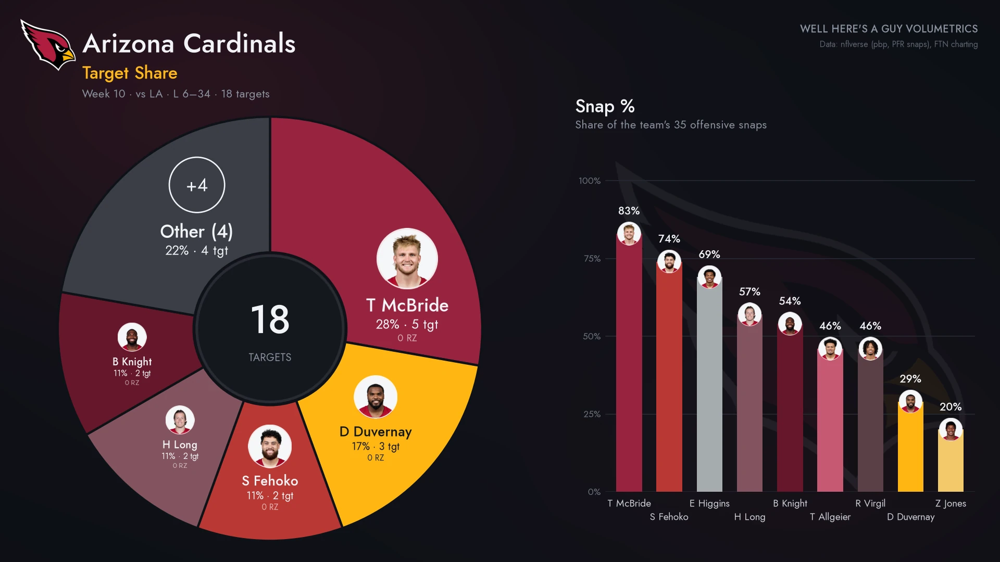
M Wilson didn't play a snap, and D Duvernay is the guy who soaked it up: 17% of the targets, up from 6%. Keep him in mind if M Wilson misses more time. No wide receiver played more than 74% of the snaps, so a rotation is capping everybody's ceiling. T McBride commanded 28% of the targets at tight end, and that's a weekly-starter role at the position.
Why this take
- M Wilson averaged 26% share before, 0 offensive snaps this week; D Duvernay share 6% -> 17%, snaps 44% -> 29%
- max WR snap share 74% (< 75%)
- T McBride (TE): 28% target share
Atlanta Falcons

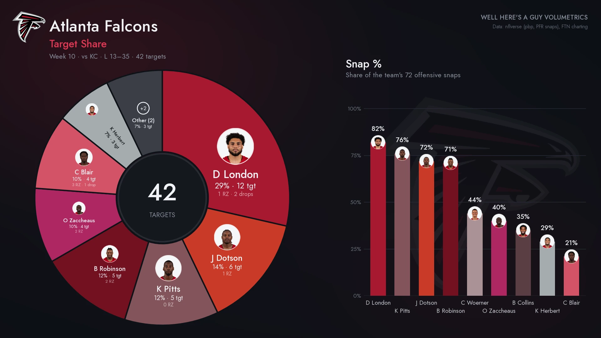
D London is the clear No. 1 here with 29% of the targets (12). D London did drop 2 balls, which is the kind of thing that costs you targets if it keeps up.
Why this take
- D London: 28.6% target share (>= 28%)
- D London: 2 drops (FTN)
Baltimore Ravens

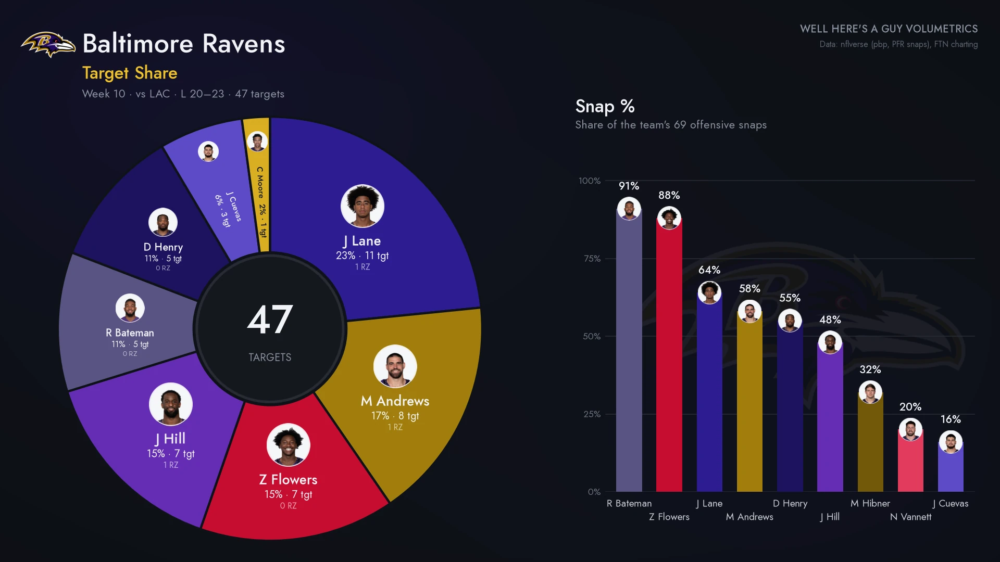
Don't panic on Z Flowers: 15% of the looks this week, but he was at 30% coming in and still played 88% of the snaps. I'd buy low. M Andrews pulled 17% of the targets on just 58% of the snaps. If that snap share climbs, he's a sneaky add. No one dominated here. 6 different players got 10%+ of the looks, which is fine for the offense and tough for fantasy.
Why this take
- Z Flowers: 30% prior avg -> 15%; snaps 67% -> 88%
- M Andrews: 17% target share on 58% snaps
- top share 23% (< 25%), 6 players >= 10%
Buffalo Bills

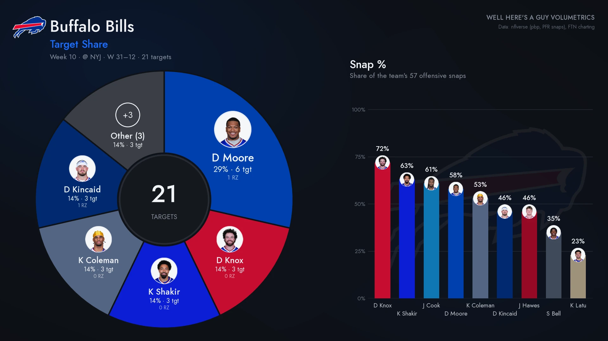
D Moore is the clear No. 1 here with 29% of the targets (6). No wide receiver played more than 63% of the snaps, so a rotation is capping everybody's ceiling. Only 21 targets to go around, so even a big share doesn't buy much.
Why this take
- D Moore: 28.6% target share (>= 28%)
- max WR snap share 63% (< 75%)
- 21 team targets (<= 22)
Carolina Panthers

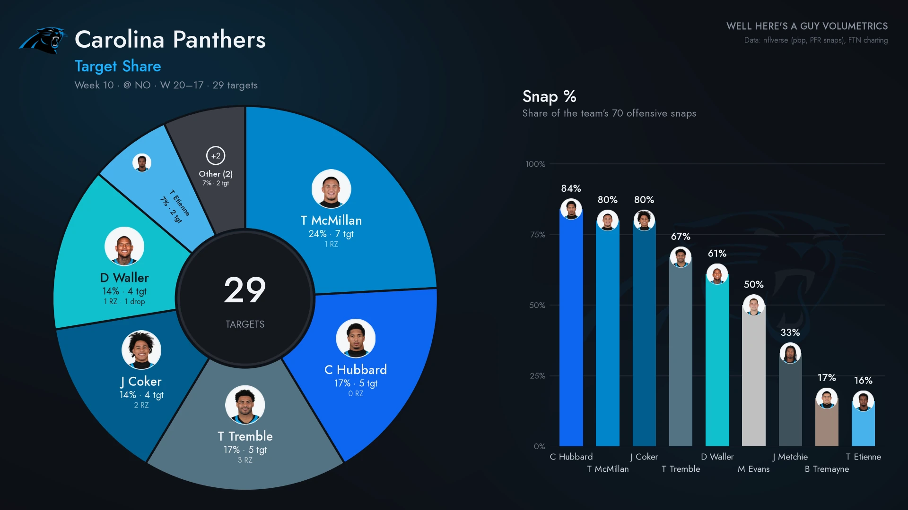
T Tremble got 3 of the team's 7 red-zone targets, and that's where touchdowns come from. A lot of targets spread around this week: 5 guys hit double-digit share and nobody topped 24%. C Hubbard had 5 targets out of the backfield (17%). That's real PPR value.
Why this take
- T Tremble: 3 of 7 team red-zone targets
- top share 24% (< 25%), 5 players >= 10%
- C Hubbard (RB): 17% target share
Cincinnati Bengals

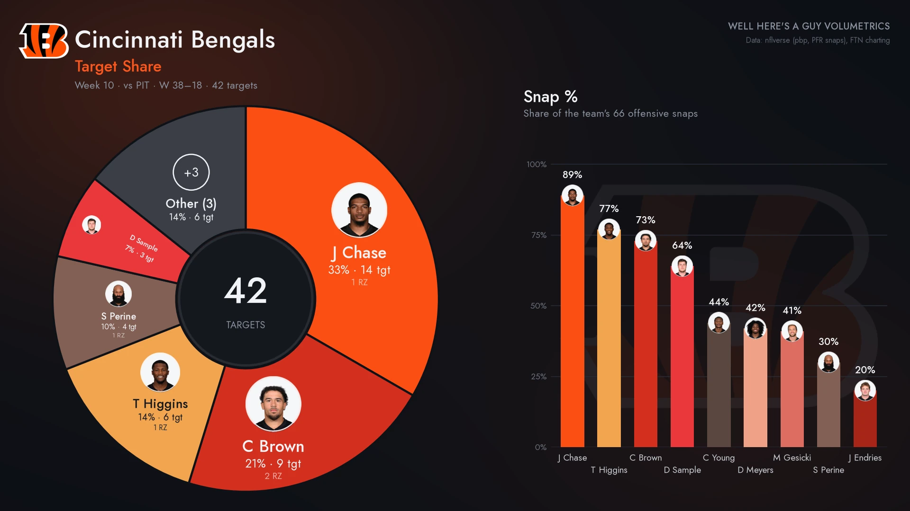
J Chase is the clear No. 1 here with 33% of the targets (14). C Brown had 9 targets out of the backfield (21%). That's real PPR value.
Why this take
- J Chase: 33.3% target share (>= 28%)
- C Brown (RB): 21% target share
Cleveland Browns

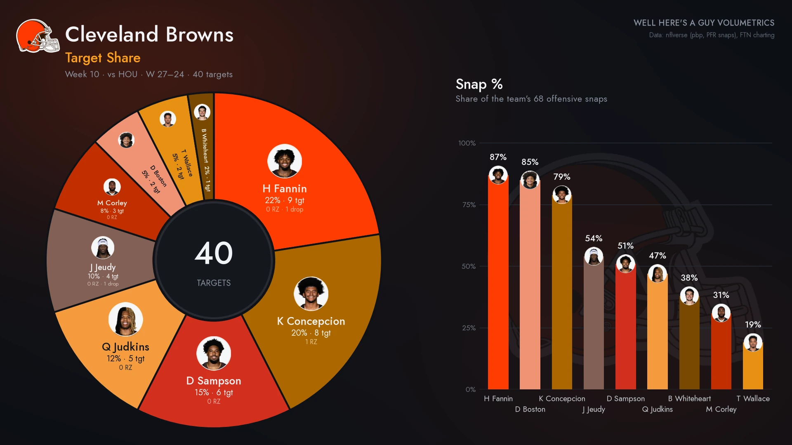
Look at how tight H Fannin and K Concepcion are: 9 targets to 8. And K Concepcion had the bigger red-zone role (1 RZ to 0). Don't panic on D Boston: 5% of the looks this week, but he was at 21% coming in and still played 85% of the snaps. I'd buy low. A lot of targets spread around this week: 5 guys hit double-digit share and nobody topped 22%.
Why this take
- H Fannin 22.5% vs K Concepcion 20.0% (gap <= 4%)
- D Boston: 21% prior avg -> 5%; snaps 91% -> 85%
- top share 22% (< 25%), 5 players >= 10%
Dallas Cowboys

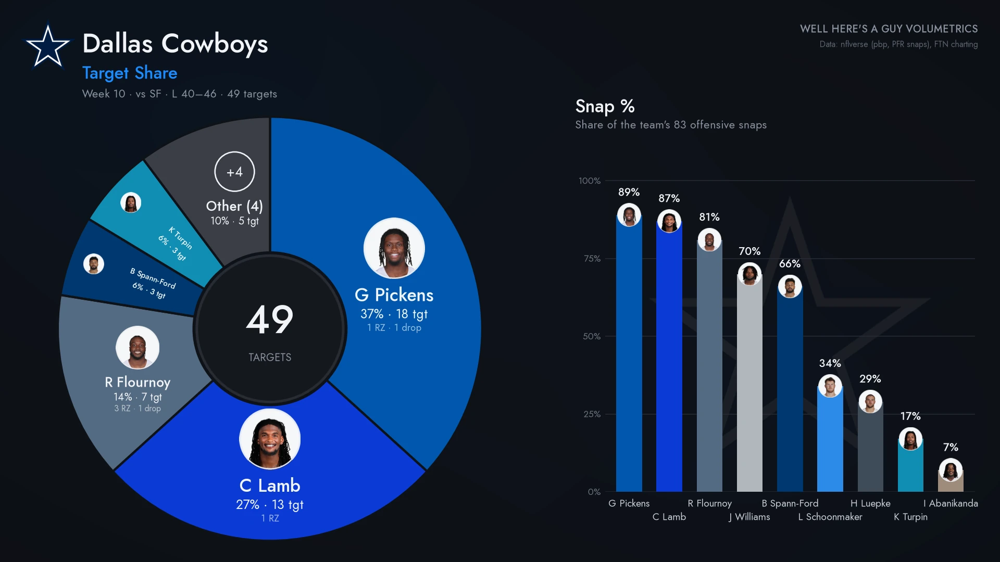
This passing game runs through G Pickens: 18 targets, 37% of the share. 49 targets total, so this team threw a ton. Don't expect every number here to repeat.
Why this take
- G Pickens: 36.7% target share (>= 28%)
- 49 team targets (>= 45)
Detroit Lions

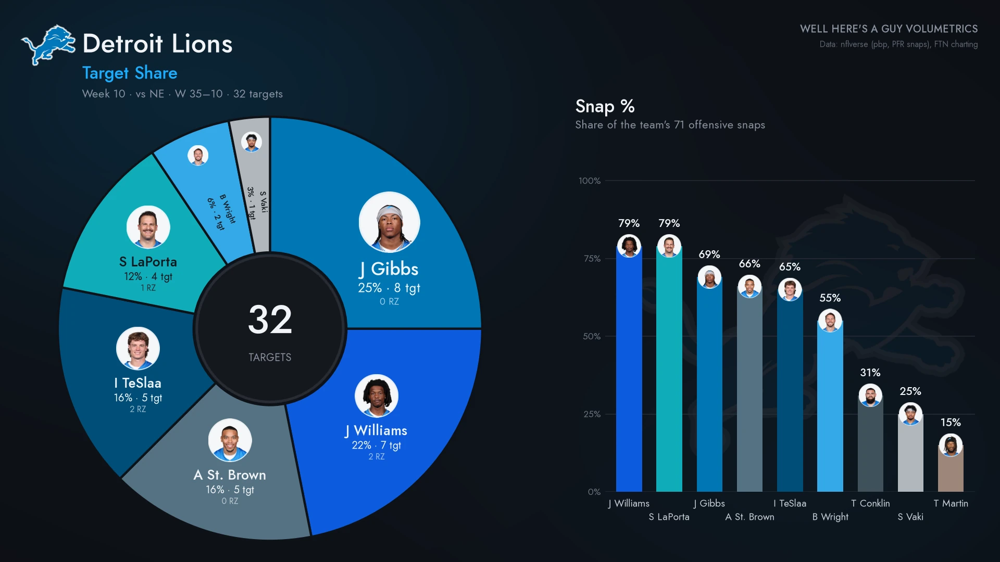
Look at how tight J Gibbs and J Williams are: 8 targets to 7. J Williams actually played more snaps (79% to 69%). Don't panic on A St. Brown: 16% of the looks this week, but he was at 33% coming in and still played 66% of the snaps. I'd buy low. J Williams also got 2 of the team's 5 red-zone targets, and that's where touchdowns come from.
Why this take
- J Gibbs 25.0% vs J Williams 21.9% (gap <= 4%)
- A St. Brown: 33% prior avg -> 16%; snaps 83% -> 66%
- J Williams: 2 of 5 team red-zone targets
Green Bay Packers

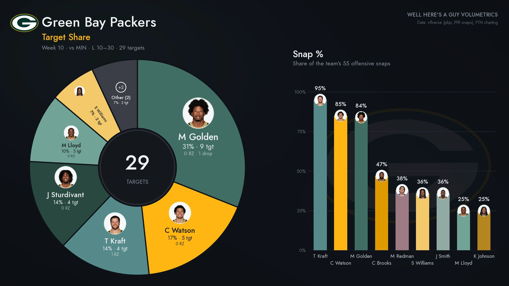
M Golden is the clear No. 1 here with 31% of the targets (9).
Why this take
- M Golden: 31.0% target share (>= 28%)
Houston Texans

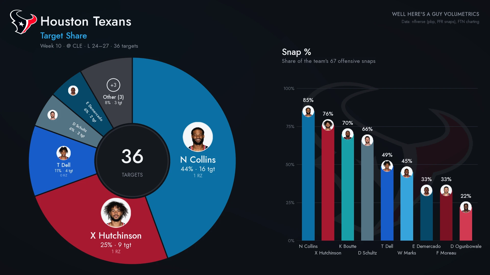
16 targets for N Collins. That's 44% of the pie, and it went for 9-94, 1 TD. Any time a guy gets over 40% of the looks, you expect a big day, and he delivered.
Why this take
- N Collins: 16/36 = 44.4% target share (>= 40%)
Indianapolis Colts

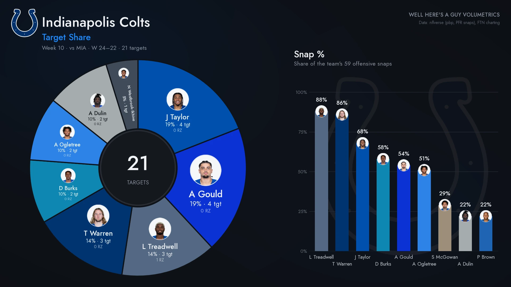
K Allen didn't play a snap, and A Gould is the guy who soaked it up: 19% of the targets, up from 2%. Keep him in mind if K Allen misses more time. No one dominated here. 4 different players got 10%+ of the looks, which is fine for the offense and tough for fantasy. J Taylor had 4 targets out of the backfield (19%). That's real PPR value.
Why this take
- K Allen averaged 22% share before, 0 offensive snaps this week; A Gould share 2% -> 19%, snaps 2% -> 54%
- top share 19% (< 25%), 4 players >= 10%
- J Taylor (RB): 19% target share
Jacksonville Jaguars

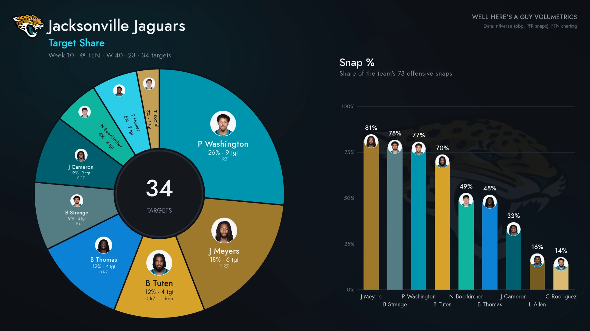
P Washington led the way with 9 targets (26%), with J Meyers next at 6 (18%).
Why this take
- top two by targets
Kansas City Chiefs

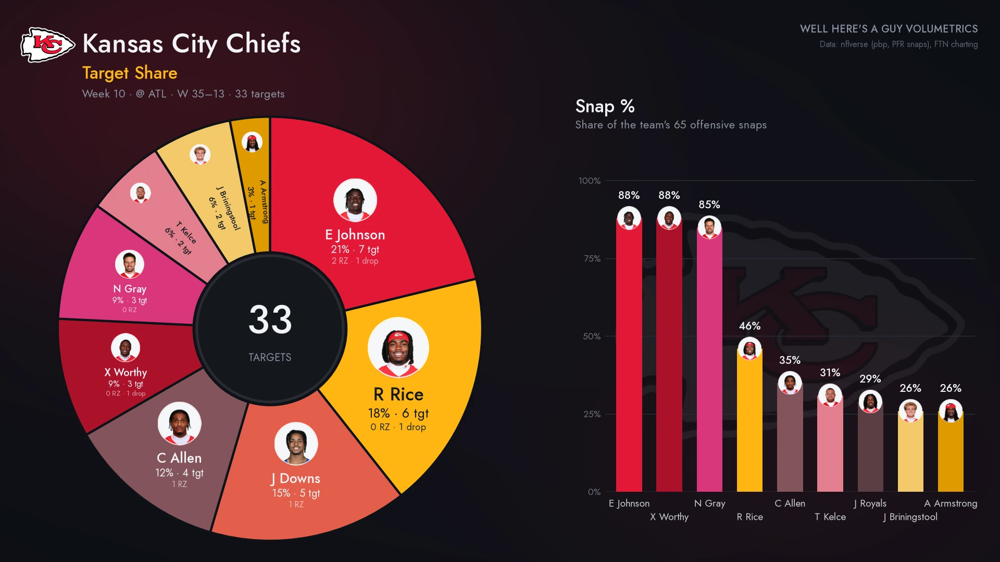
X Worthy only saw 9% of the targets after averaging 19%, even on 88% of the snaps. The role is still there. This is a buy-low window. R Rice pulled 18% of the targets on just 46% of the snaps. If that snap share climbs, he's a sneaky add. E Johnson got 2 of the team's 4 red-zone targets, and that's where touchdowns come from.
Why this take
- X Worthy: 19% prior avg -> 9%; snaps 82% -> 88%
- R Rice: 18% target share on 46% snaps
- E Johnson: 2 of 4 team red-zone targets
Las Vegas Raiders

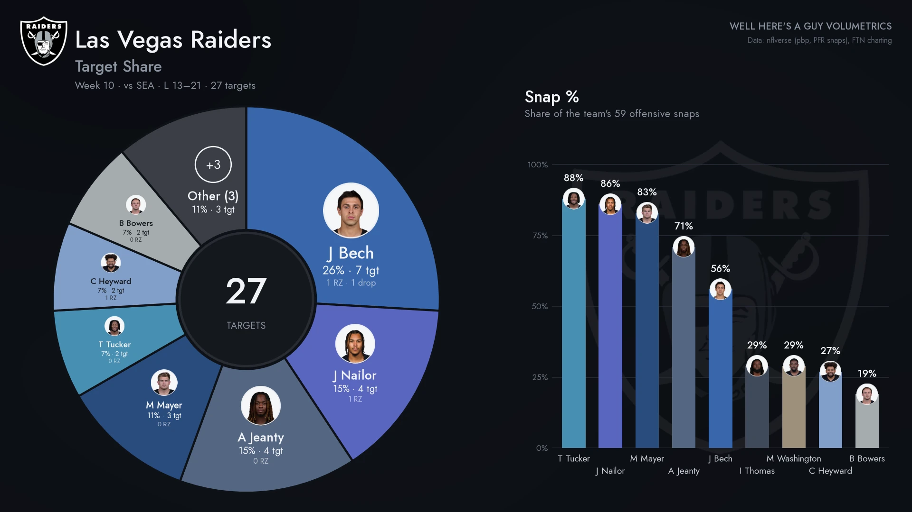
B Bowers fell to 7% of the targets and only played 19% of the snaps after averaging 86%, so something kept him off the field. Check the injury report before reading anything into it. J Bech pulled 26% of the targets on just 56% of the snaps. If that snap share climbs, he's a sneaky add. Notice T Tucker actually played 88% of the snaps but only got 2 targets.
Why this take
- B Bowers: 29% prior avg -> 7%; snaps 86% -> 19%
- J Bech: 26% target share on 56% snaps
- T Tucker: 88% snaps but 2 targets (7%)
Los Angeles Chargers

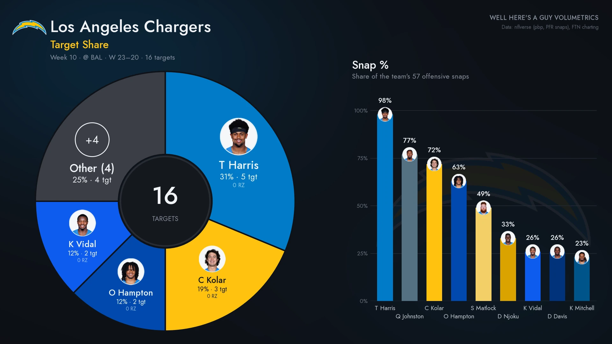
This passing game runs through T Harris: 5 targets, 31% of the share. Only 16 targets to go around, so even a big share doesn't buy much.
Why this take
- T Harris: 31.2% target share (>= 28%)
- 16 team targets (<= 22)
Los Angeles Rams

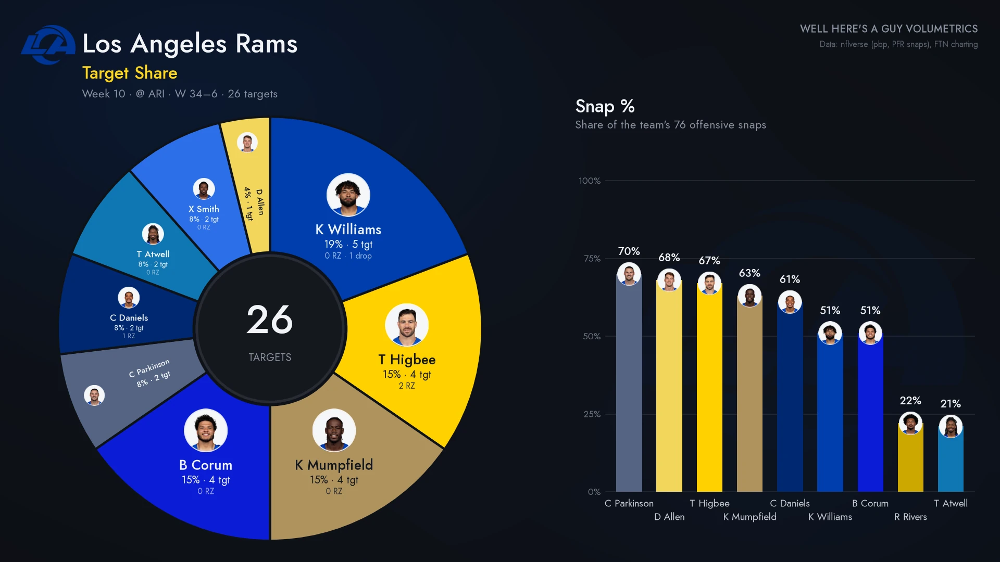
P Nacua didn't play a snap, and K Mumpfield is the guy who soaked it up: 15% of the targets, up from 7%. Keep him in mind if P Nacua misses more time. This passing offense is a mess: no receiver cleared 75% of the snaps and nobody got a real share of the targets (top guy was 19%). Hard to trust anyone here until something changes. K Williams pulled 19% of the targets on just 51% of the snaps. If that snap share climbs, he's a sneaky add.
Why this take
- P Nacua averaged 36% share before, 0 offensive snaps this week; K Mumpfield share 7% -> 15%, snaps 43% -> 63%
- top share 19% (< 25%), 4 players >= 10%, max WR snaps 63%
- K Williams: 19% target share on 51% snaps
Miami Dolphins

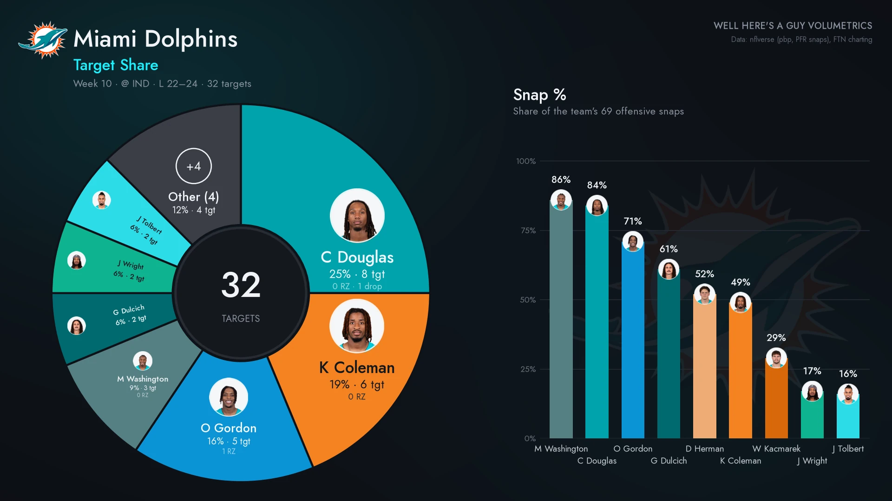
D Achane didn't play a snap, and O Gordon is the guy who soaked it up: 16% of the targets, up from 5%. Keep him in mind if D Achane misses more time. M Washington only saw 9% of the targets after averaging 24%, even on 86% of the snaps. The role is still there. This is a buy-low window. K Coleman pulled 19% of the targets on just 49% of the snaps. If that snap share climbs, he's a sneaky add.
Why this take
- D Achane averaged 16% share before, 0 offensive snaps this week; O Gordon share 5% -> 16%, snaps 58% -> 71%
- M Washington: 24% prior avg -> 9%; snaps 82% -> 86%
- K Coleman: 19% target share on 49% snaps
Minnesota Vikings

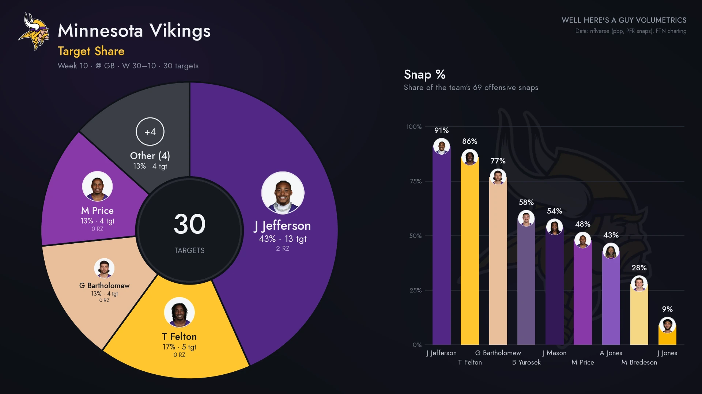
J Jefferson soaked up 43% of the targets (13 looks) but only got 9-74 out of it. That kind of volume doesn't stay quiet for long. T Hockenson didn't play a snap, and T Felton is the guy who soaked it up: 17% of the targets, up from 4%. Keep him in mind if T Hockenson misses more time. J Jefferson also got 2 of the team's 3 red-zone targets, and that's where touchdowns come from.
Why this take
- J Jefferson: 13/30 = 43.3% target share (>= 40%)
- T Hockenson averaged 20% share before, 0 offensive snaps this week; T Felton share 4% -> 17%, snaps 30% -> 86%
- J Jefferson: 2 of 3 team red-zone targets
New England Patriots

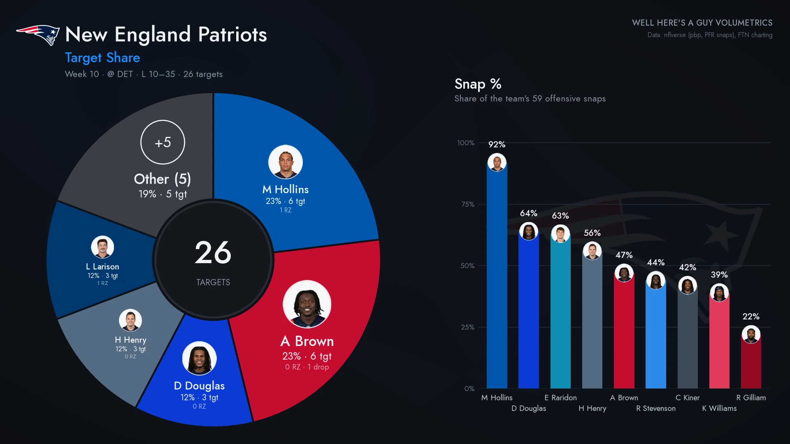
M Hollins (23%) and A Brown (23%) are a lot closer than most people think. A lot of targets spread around this week: 5 guys hit double-digit share and nobody topped 23%.
Why this take
- M Hollins 23.1% vs A Brown 23.1% (gap <= 4%)
- top share 23% (< 25%), 5 players >= 10%
New Orleans Saints

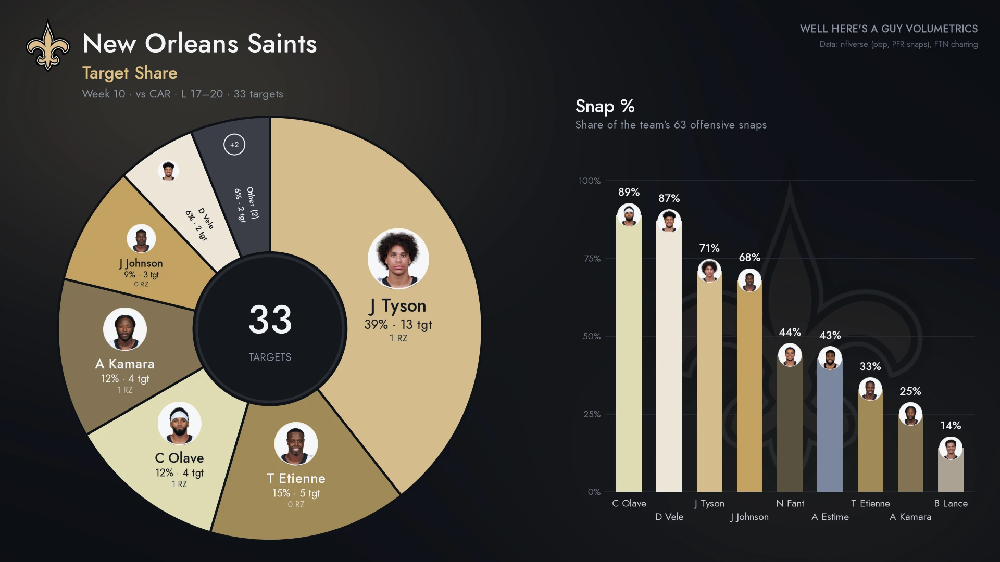
J Tyson is the clear No. 1 here with 39% of the targets (13). C Olave only saw 12% of the targets after averaging 28%, even on 89% of the snaps. The role is still there. This is a buy-low window. Notice D Vele actually played 87% of the snaps but only got 2 targets.
Why this take
- J Tyson: 39.4% target share (>= 28%)
- C Olave: 28% prior avg -> 12%; snaps 81% -> 89%
- D Vele: 87% snaps but 2 targets (6%)
New York Giants

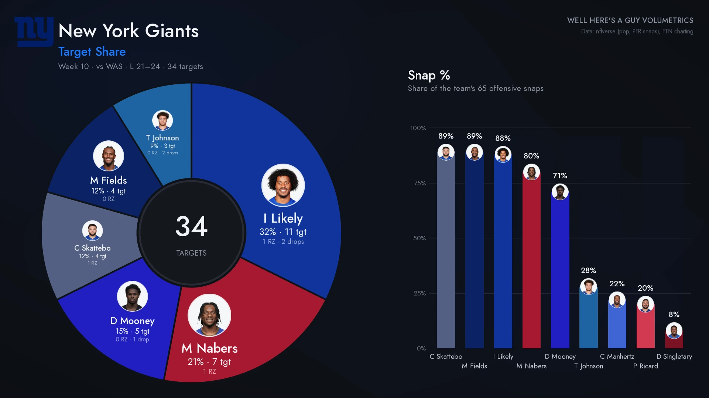
I Likely is the clear No. 1 here with 32% of the targets (11). I Likely did drop 2 balls, which is the kind of thing that costs you targets if it keeps up.
Why this take
- I Likely: 32.4% target share (>= 28%)
- I Likely: 2 drops (FTN)
New York Jets

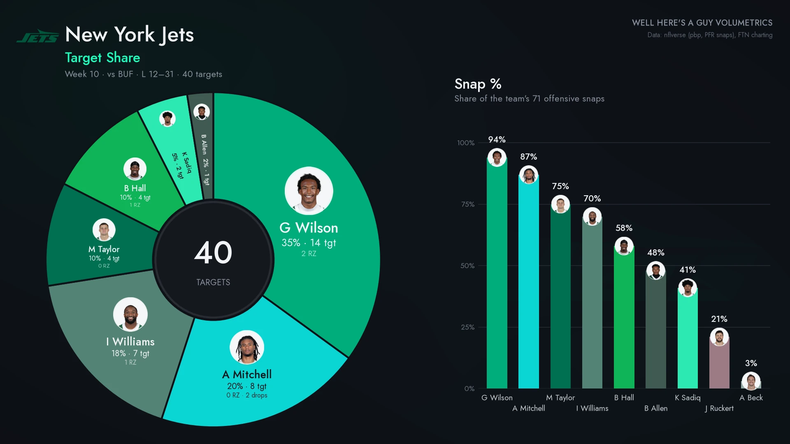
G Wilson is the clear No. 1 here with 35% of the targets (14). G Wilson also got 2 of the team's 5 red-zone targets, and that's where touchdowns come from. A Mitchell did drop 2 balls, which is the kind of thing that costs you targets if it keeps up.
Why this take
- G Wilson: 35.0% target share (>= 28%)
- G Wilson: 2 of 5 team red-zone targets
- A Mitchell: 2 drops (FTN)
Pittsburgh Steelers

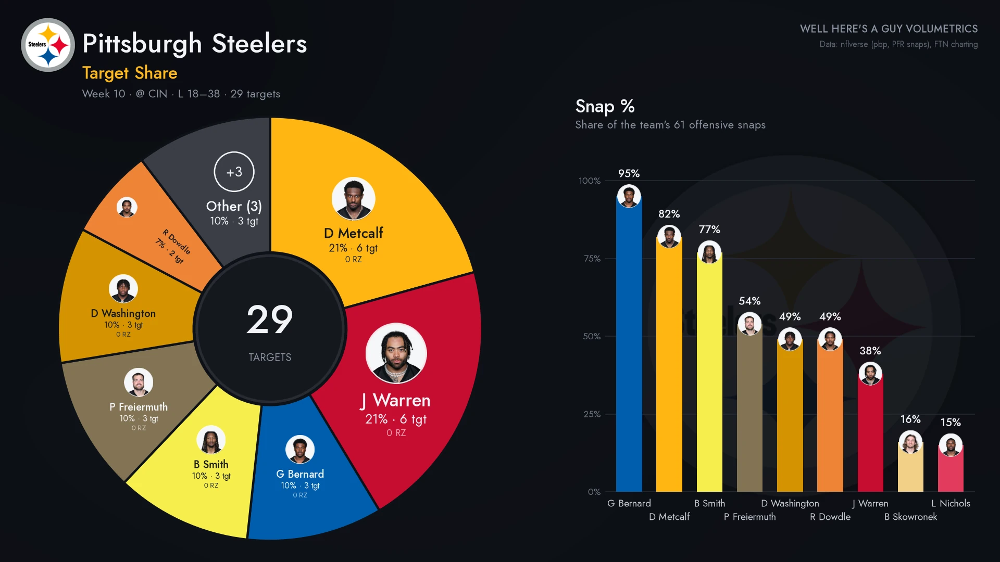
D Metcalf (21%) and J Warren (21%) are a lot closer than most people think. No one dominated here. 6 different players got 10%+ of the looks, which is fine for the offense and tough for fantasy.
Why this take
- D Metcalf 20.7% vs J Warren 20.7% (gap <= 4%)
- top share 21% (< 25%), 6 players >= 10%
San Francisco 49ers

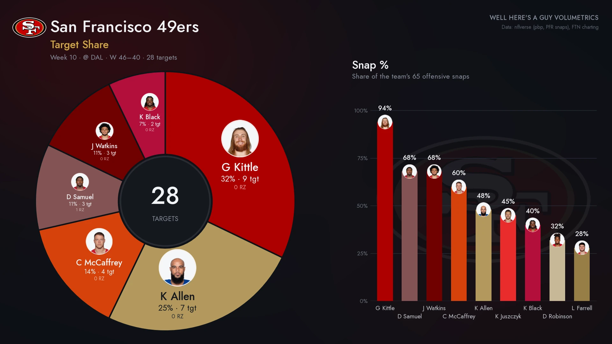
G Kittle is the clear No. 1 here with 32% of the targets (9). Notice K Allen earned 7 targets while only playing 48% of the snaps. That's a guy getting open when he's out there. No wide receiver played more than 68% of the snaps, so a rotation is capping everybody's ceiling.
Why this take
- G Kittle: 32.1% target share (>= 28%)
- K Allen: 25% target share on 48% snaps
- max WR snap share 68% (< 75%)
Seattle Seahawks

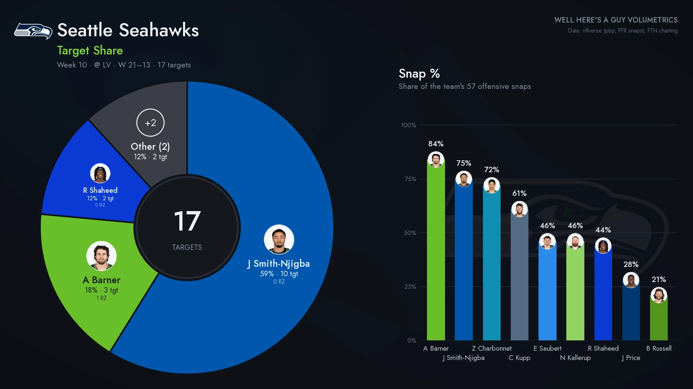
10 targets for J Smith-Njigba. That's 59% of the pie, and it went for 8-171, 1 TD. Any time a guy gets over 40% of the looks, you expect a big day, and he delivered. Only 17 targets to go around, so even a big share doesn't buy much.
Why this take
- J Smith-Njigba: 10/17 = 58.8% target share (>= 40%)
- 17 team targets (<= 22)
Tennessee Titans

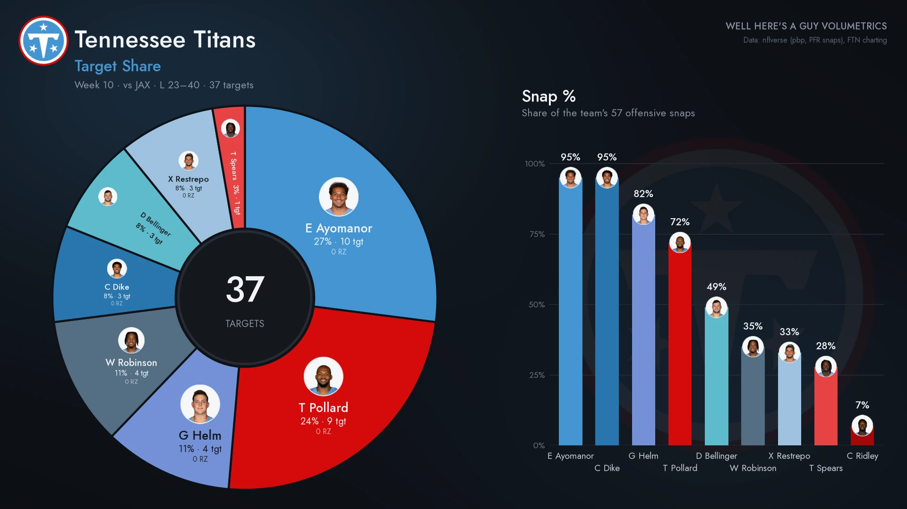
With C Tate not taking an offensive snap, E Ayomanor jumped to 27% of the targets after averaging 11%. If C Tate is out another week, E Ayomanor is a sneaky pickup. Notice T Pollard is trending up: 24% of the targets this week vs 9% coming in. C Dike was on the field for 95% of the snaps and saw just 3 looks. The routes are there; the targets aren't.
Why this take
- C Tate averaged 27% share before, 0 offensive snaps this week; E Ayomanor share 11% -> 27%, snaps 64% -> 95%
- T Pollard: 9% prior avg -> 24% (+16%)
- C Dike: 95% snaps but 3 targets (8%)
Washington Commanders

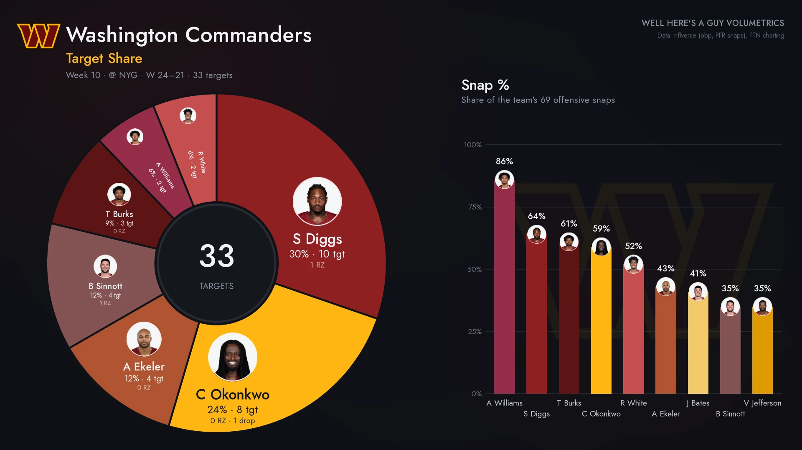
T McLaurin didn't play a snap, and B Sinnott is the guy who soaked it up: 12% of the targets, up from 1%. Keep him in mind if T McLaurin misses more time. This passing game runs through S Diggs: 10 targets, 30% of the share. Notice C Okonkwo earned 8 targets while only playing 59% of the snaps. That's a guy getting open when he's out there.
Why this take
- T McLaurin averaged 18% share before, 0 offensive snaps this week; B Sinnott share 1% -> 12%, snaps 39% -> 35%
- S Diggs: 30.3% target share (>= 28%)
- C Okonkwo: 24% target share on 59% snaps
Week 10 backfields
| Top 8 rushers | ||||||
|---|---|---|---|---|---|---|
| 27 | 92 | 87% | 84% | 11 | 28.5 | |
| 26 | 88 | 76% | 70% | 10 | 26.9 | |
| 22 | 153 | 71% | 69% | 9 | 25.5 | |
| 22 | 101 | 88% | 88% | 6 | 23.4 | |
| 22 | 105 | 81% | 63% | 3 | 15.6 | |
| 20 | 76 | 80% | 71% | 4 | 15.1 | |
| 20 | 94 | 67% | 72% | 0 | 9.6 | |
| 18 | 78 | 78% | 89% | 5 | 17.0 |
Tap a back to jump to his team, or a column to re-sort. HVT = catches plus carries inside the 10. xFP = the PPR points an average back would score on that workload.
League view

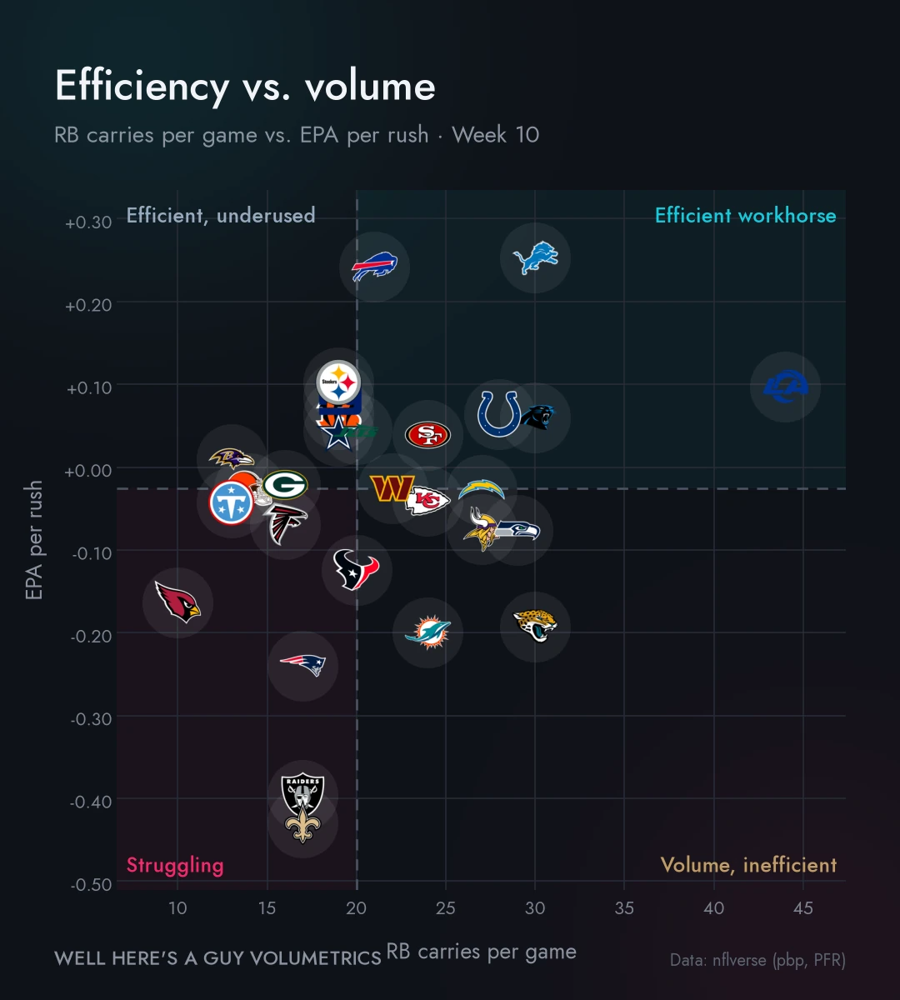

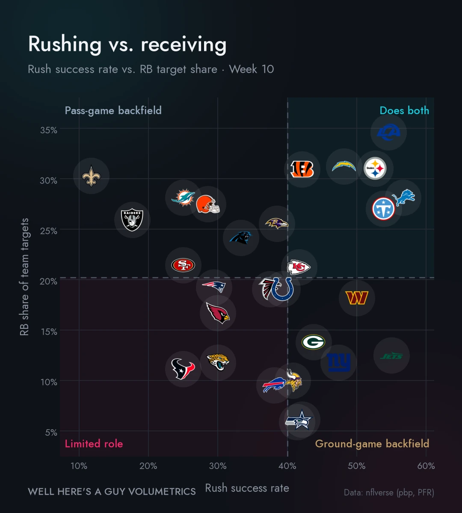

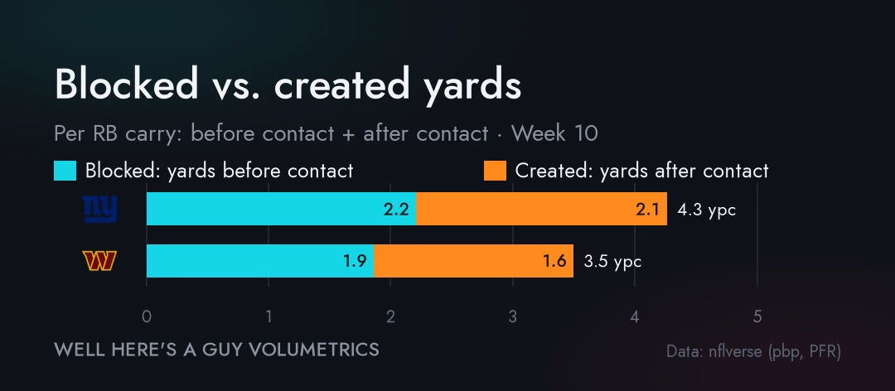

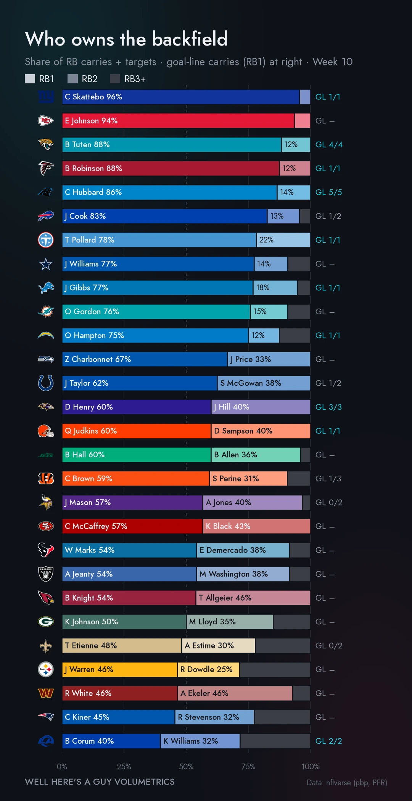
Team by team
Arizona Cardinals

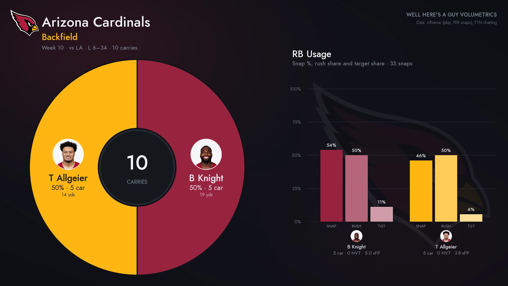
This is a committee: B Knight 50% of the carries, T Allgeier 50%. B Knight has the passing-down edge with 2 targets to 1. Hard to trust either as more than a flex.
Why this take
- B Knight 50% / T Allgeier 50% of carries
Atlanta Falcons

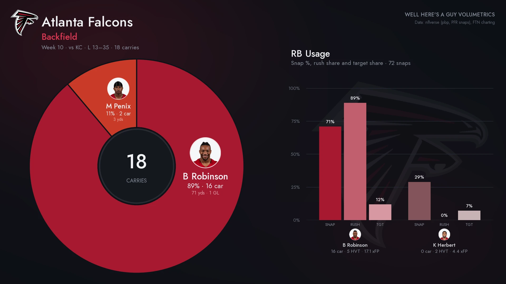
B Robinson is a true workhorse: 71% of the snaps and 89% of the carries (16). That's been his job all 4 games (81% of the carries).
Why this take
- B Robinson: 71% snaps, 89% rush share
Baltimore Ravens

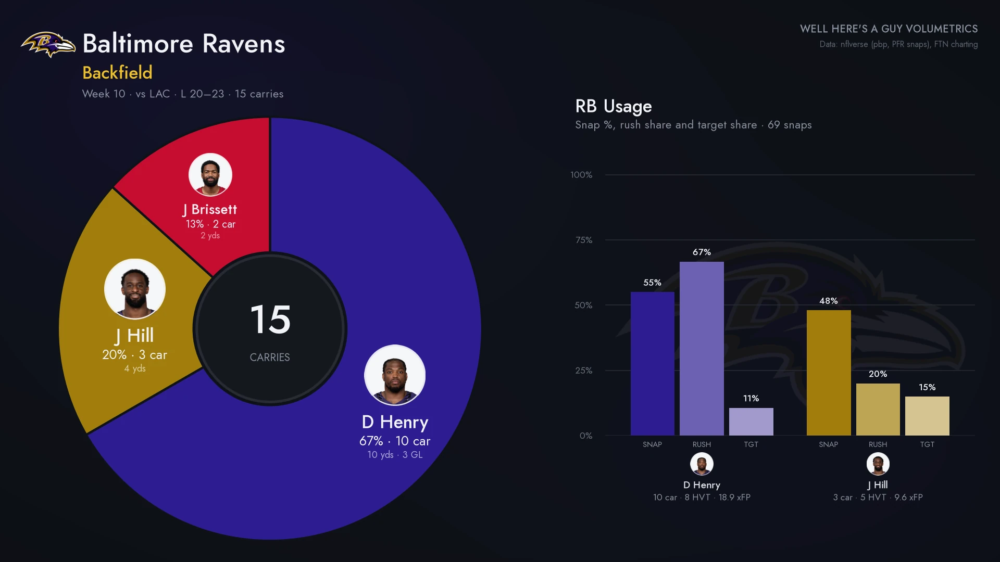
D Henry is the lead back (10 carries, 67%) but not a workhorse: he played 55% of the snaps and J Hill still got 3 carries. D Henry also got all 3 of the team's carries inside the 5. That's the touchdown role. J Hill is the passing-down back: 7 targets (15% of the team's) on 48% of the snaps. That's real value in PPR.
Why this take
- D Henry: 67% rush share, 55% snaps
- D Henry: 3 of 3 carries inside the 5
- J Hill: 15% target share, 20% rush share
Buffalo Bills

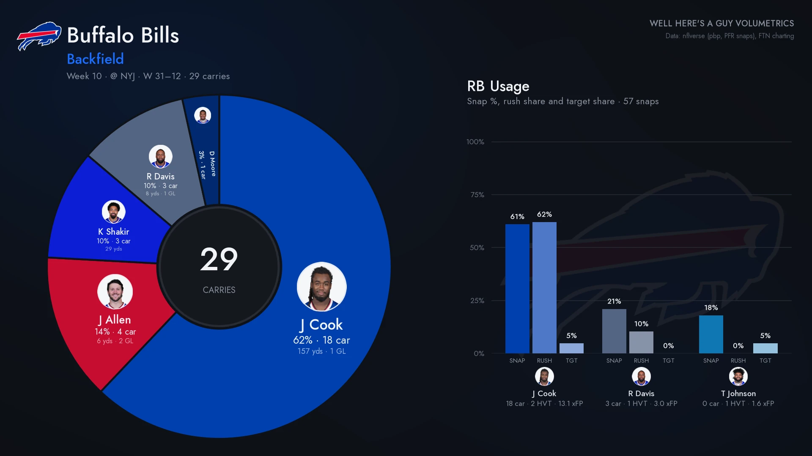
J Cook is the lead back (18 carries, 62%) but not a workhorse: he played 61% of the snaps and R Davis still got 3 carries.
Why this take
- J Cook: 62% rush share, 61% snaps
Carolina Panthers

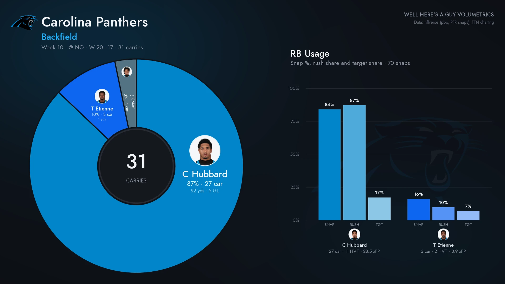
C Hubbard is a true workhorse: 84% of the snaps and 87% of the carries (27). That's been his job all 4 games (81% of the carries). C Hubbard also got all 5 of the team's carries inside the 5. That's the touchdown role.
Why this take
- C Hubbard: 84% snaps, 87% rush share
- C Hubbard: 5 of 5 carries inside the 5
Cincinnati Bengals

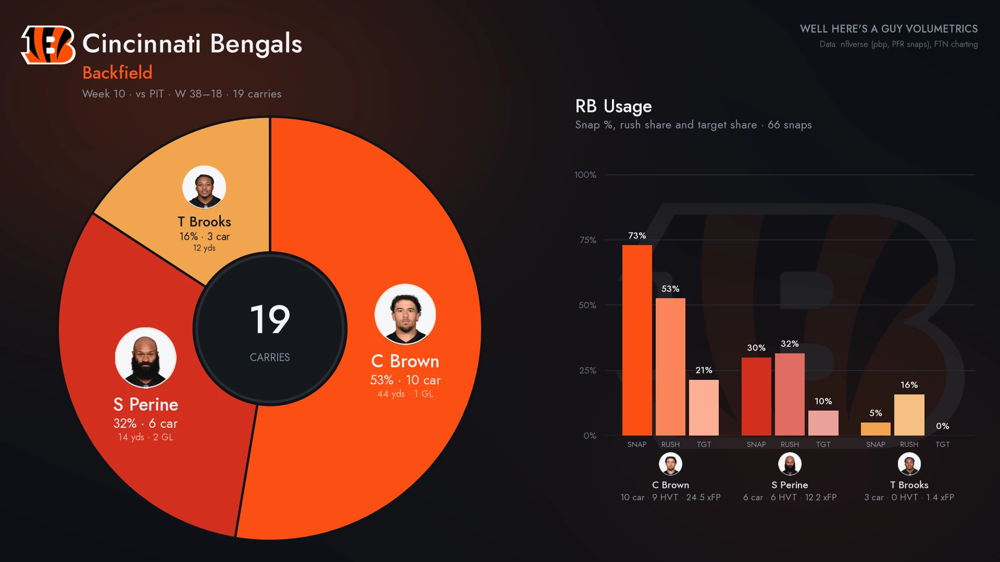
This is a committee: C Brown 53% of the carries, S Perine 32%. C Brown has the passing-down edge with 9 targets to 4. Hard to trust either as more than a flex. S Perine also got 2 of the team's 3 carries inside the 5. That's the touchdown role.
Why this take
- C Brown 53% / S Perine 32% of carries
- S Perine: 2 of 3 carries inside the 5
Cleveland Browns

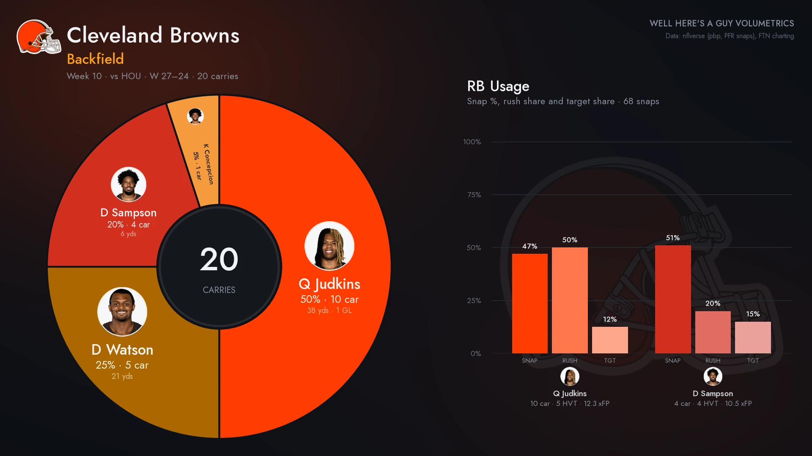
Q Judkins is the lead back (10 carries, 50%) but not a workhorse: he played 47% of the snaps and D Sampson still got 4 carries. D Sampson is the passing-down back: 6 targets (15% of the team's) on 51% of the snaps. That's real value in PPR.
Why this take
- Q Judkins: 50% rush share, 47% snaps
- D Sampson: 15% target share, 20% rush share
Dallas Cowboys

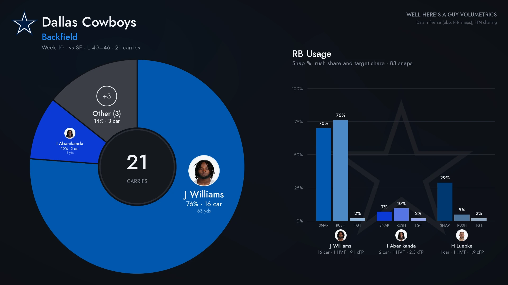
J Williams is a true workhorse: 70% of the snaps and 76% of the carries (16). That's been his job all 4 games (69% of the carries).
Why this take
- J Williams: 70% snaps, 76% rush share
Detroit Lions

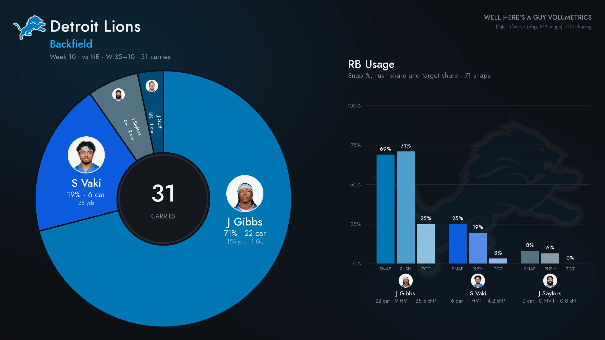
J Gibbs is the lead back (22 carries, 71%) but not a workhorse: he played 69% of the snaps and S Vaki still got 6 carries. J Gibbs had 9 high-value touches (catches plus carries inside the 10). Those are the touches that score fantasy points.
Why this take
- J Gibbs: 71% rush share, 69% snaps
- J Gibbs: 9 high-value touches
Green Bay Packers

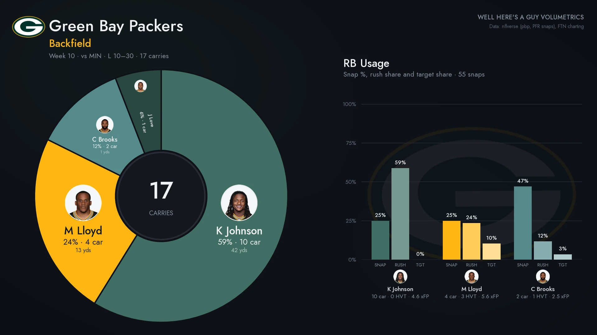
J Jacobs didn't play in Week 10 after taking 69% of the carries early in this stretch. K Johnson took 59% of the carries in Week 10. If J Jacobs sits again, K Johnson is the add. K Johnson is the lead back (10 carries, 59%) but not a workhorse: he played 25% of the snaps and M Lloyd still got 4 carries. M Lloyd is the passing-down back: 3 targets (10% of the team's) on 25% of the snaps. That's real value in PPR.
Why this take
- J Jacobs: 69% rush share early, missed [10]
- K Johnson: 59% rush share, 25% snaps
- M Lloyd: 10% target share, 24% rush share
Houston Texans

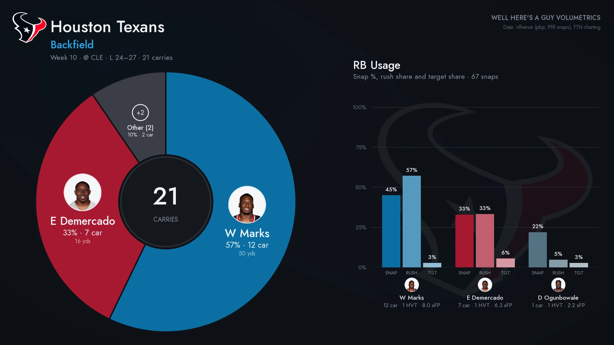
This is a committee: W Marks 57% of the carries, E Demercado 33%. E Demercado has the passing-down edge with 2 targets to 1. Hard to trust either as more than a flex.
Why this take
- W Marks 57% / E Demercado 33% of carries
Indianapolis Colts

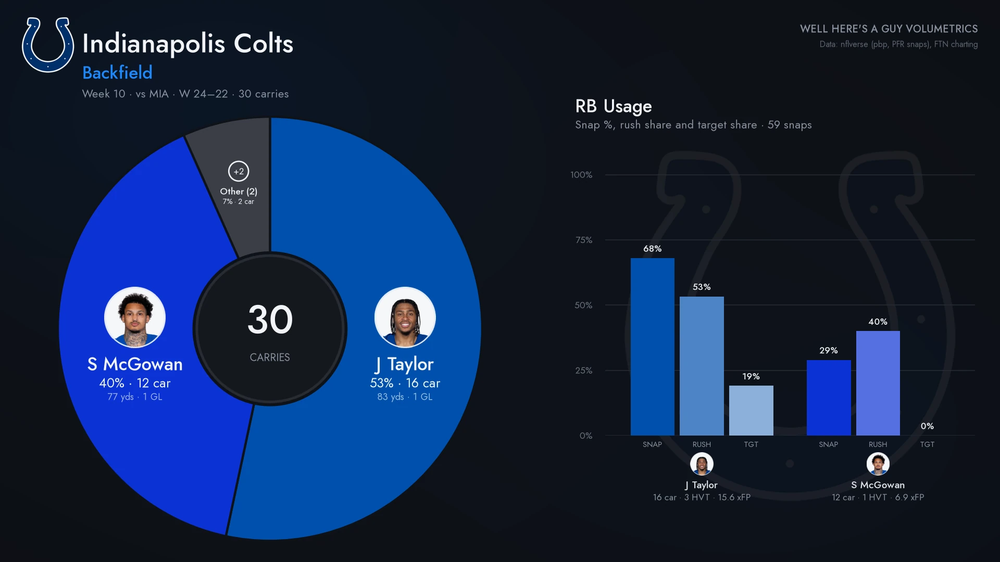
This is a committee: J Taylor 53% of the carries, S McGowan 40%. J Taylor has the passing-down edge with 4 targets to 0. Hard to trust either as more than a flex.
Why this take
- J Taylor 53% / S McGowan 40% of carries
Jacksonville Jaguars

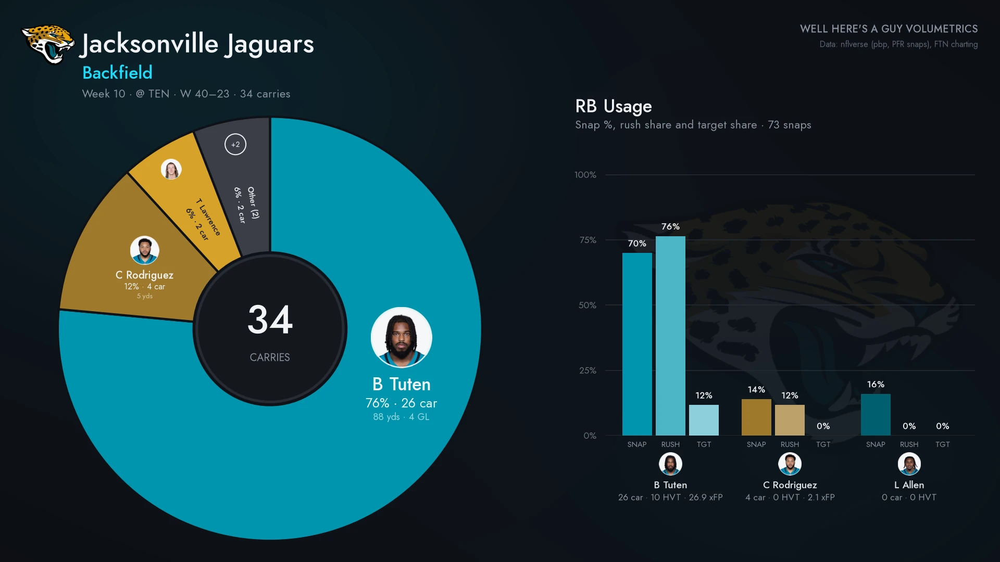
B Tuten is a true workhorse: 70% of the snaps and 76% of the carries (26). B Tuten also got all 4 of the team's carries inside the 5. That's the touchdown role.
Why this take
- B Tuten: 70% snaps, 76% rush share
- B Tuten: 4 of 4 carries inside the 5
Kansas City Chiefs

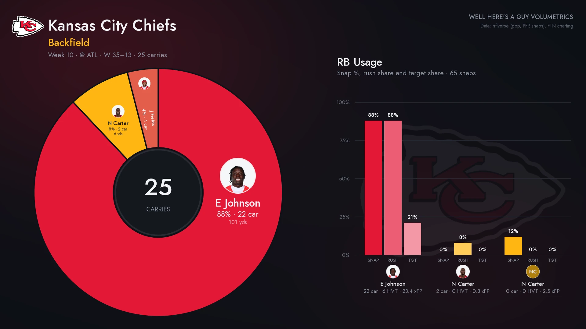
K Walker didn't play in Week 10 after taking 96% of the carries early in this stretch. E Johnson took 88% of the carries in Week 10. If K Walker sits again, E Johnson is the add. E Johnson is a true workhorse: 88% of the snaps and 88% of the carries (22). E Johnson had 6 high-value touches (catches plus carries inside the 10). Those are the touches that score fantasy points.
Why this take
- K Walker: 96% rush share early, missed [10]
- E Johnson: 88% snaps, 88% rush share
- E Johnson: 6 high-value touches
Las Vegas Raiders

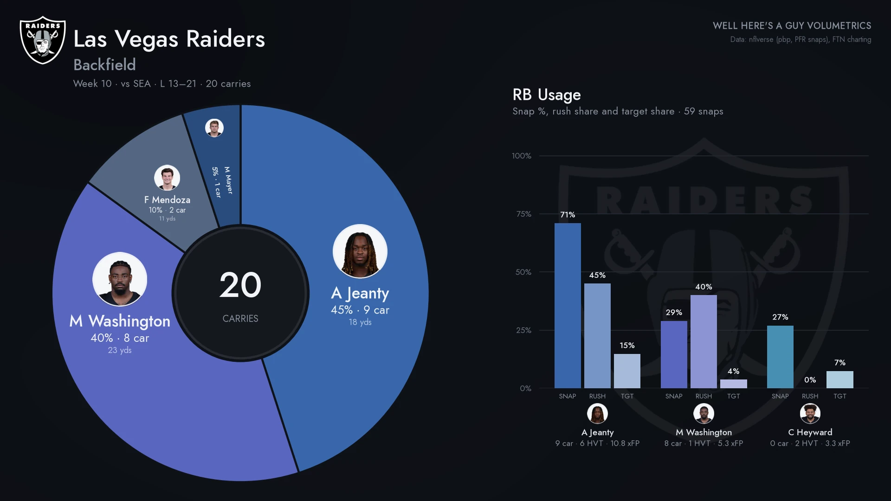
This is a committee: A Jeanty 45% of the carries, M Washington 40%. A Jeanty has the passing-down edge with 4 targets to 1. Hard to trust either as more than a flex. A Jeanty had 6 high-value touches (catches plus carries inside the 10). Those are the touches that score fantasy points.
Why this take
- A Jeanty 45% / M Washington 40% of carries
- A Jeanty: 6 high-value touches
Los Angeles Chargers

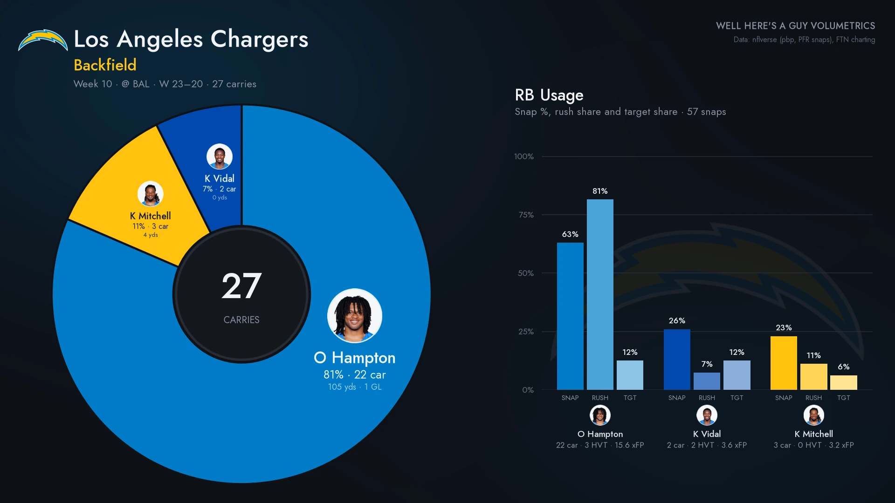
O Hampton is the lead back (22 carries, 81%) but not a workhorse: he played 63% of the snaps and K Mitchell still got 3 carries. K Vidal's grip on the backfield is slipping: 37% of the carries early in this stretch, 16% lately.
Why this take
- O Hampton: 81% rush share, 63% snaps
- K Vidal: rush share 37% -> 16% over 4
Los Angeles Rams

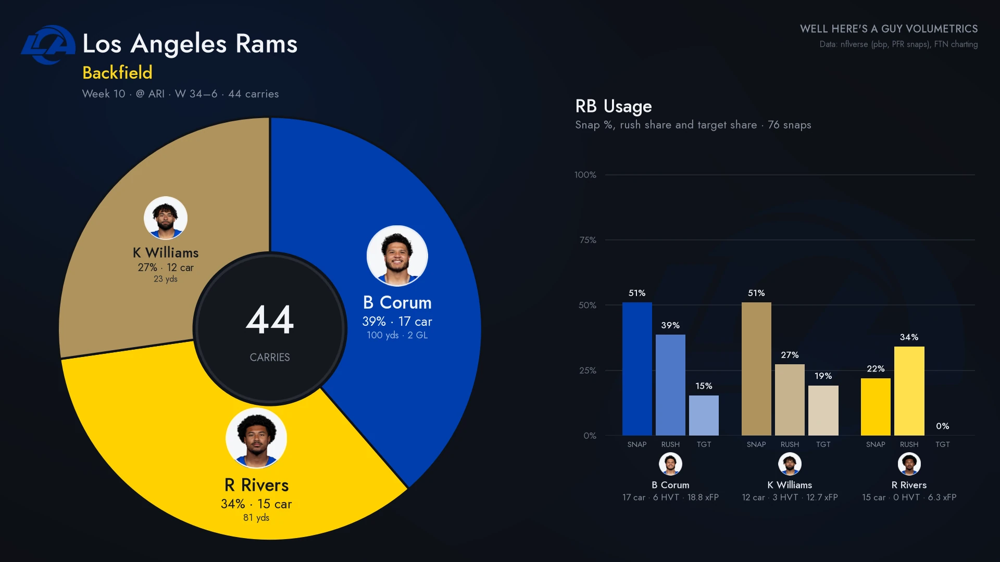
This is a committee: B Corum 39% of the carries, R Rivers 34%. B Corum has the passing-down edge with 4 targets to 0. Hard to trust either as more than a flex. B Corum also got both of the team's carries inside the 5. That's the touchdown role. K Williams only scored 5.2 PPR on usage worth about 12.7. The work is there and the points should follow. Buy-low.
Why this take
- B Corum 39% / R Rivers 34% of carries
- B Corum: 2 of 2 carries inside the 5
- K Williams: 5.2 PPR on 12.7 expected
Miami Dolphins

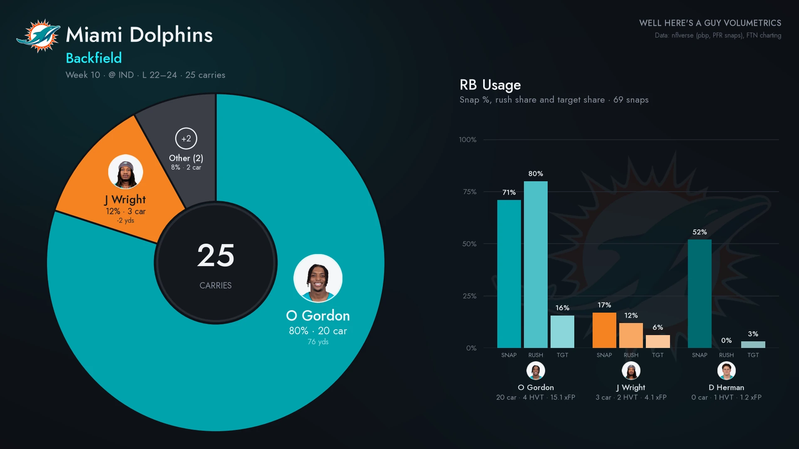
O Gordon is a true workhorse: 71% of the snaps and 80% of the carries (20). That's been his job all 4 games (79% of the carries).
Why this take
- O Gordon: 71% snaps, 80% rush share
Minnesota Vikings

This is a committee: J Mason 57% of the carries, A Jones 39%. Hard to trust either as more than a flex. A Jones also got both of the team's carries inside the 5. That's the touchdown role.
Why this take
- J Mason 57% / A Jones 39% of carries
- A Jones: 2 of 2 carries inside the 5
New England Patriots

This is a committee: C Kiner 56% of the carries, R Stevenson 33%. R Stevenson has the passing-down edge with 1 targets to 0. Hard to trust either as more than a flex. L Larison is the passing-down back: 3 targets (12% of the team's) on 14% of the snaps. That's real value in PPR.
Why this take
- C Kiner 56% / R Stevenson 33% of carries
- L Larison: 12% target share, 6% rush share
New Orleans Saints

K Miller didn't play in Week 10 after taking 54% of the carries early in this stretch. T Etienne took 44% of the carries in Week 10. If K Miller sits again, T Etienne is the add. This is a committee: T Etienne 44% of the carries, A Estime 39%. T Etienne has the passing-down edge with 5 targets to 1. Hard to trust either as more than a flex. A Kamara is the passing-down back: 4 targets (12% of the team's) on 25% of the snaps. That's real value in PPR.
Why this take
- K Miller: 54% rush share early, missed [9, 10]
- T Etienne 44% / A Estime 39% of carries
- A Kamara: 12% target share, 11% rush share
New York Giants

C Skattebo is a true workhorse: 89% of the snaps and 78% of the carries (18). Notice D Singletary's carries climbing: 18% of the rush share early in this stretch, 41% in the last two games.
Why this take
- C Skattebo: 89% snaps, 78% rush share
- D Singletary: rush share 18% -> 41% over 4
New York Jets

This is a committee: B Hall 55% of the carries, B Allen 40%. B Hall has the passing-down edge with 4 targets to 1. Hard to trust either as more than a flex.
Why this take
- B Hall 55% / B Allen 40% of carries
Pittsburgh Steelers

J Warren's grip on the backfield is slipping: 67% of the carries early in this stretch, 42% lately.
Why this take
- J Warren: rush share 67% -> 42% over 4
San Francisco 49ers

This is a committee: C McCaffrey 48% of the carries, K Black 41%. C McCaffrey has the passing-down edge with 4 targets to 2. Hard to trust either as more than a flex.
Why this take
- C McCaffrey 48% / K Black 41% of carries
Seattle Seahawks

Z Charbonnet is a true workhorse: 72% of the snaps and 67% of the carries (20).
Why this take
- Z Charbonnet: 72% snaps, 67% rush share
Tennessee Titans

T Pollard is the lead back (9 carries, 64%) but not a workhorse: he played 72% of the snaps and T Spears still got 4 carries. T Pollard had 9 high-value touches (catches plus carries inside the 10). Those are the touches that score fantasy points.
Why this take
- T Pollard: 64% rush share, 72% snaps
- T Pollard: 9 high-value touches
Washington Commanders

This is a committee: R White 44% of the carries, A Ekeler 36%. A Ekeler has the passing-down edge with 4 targets to 2. Hard to trust either as more than a flex.
Why this take
- R White 44% / A Ekeler 36% of carries
Trends: each team's last 4 games
Top target shares, last 4 games
| J Smith-Njigba | 41% | |
| C Lamb | 38% | |
| J Jefferson | 36% | |
| P Nacua | 34% | |
| J Chase | 34% |
Arizona Cardinals

| Target share | Wk 7 | Wk 8 | Wk 9 | Wk 10 | All |
|---|---|---|---|---|---|
| T McBride | 30% | 20% | 28% | 28% | 26% |
| M Wilson | 18% | 37% | 24% | – | 23% |
| T Allgeier | 7% | 12% | 10% | 6% | 9% |
| E Higgins | 7% | 10% | 7% | 0% | 7% |
| B Knight | 11% | 5% | – | 11% | 7% |
T McBride is the clear No. 1 over the last 4 games: 34 targets, 26% of the share. M Wilson didn't play in Week 10 after drawing 27% of the targets early in this stretch. If he's back, he should slide right back into that role, so watch his status. Notice T Allgeier's snaps went from 53% to 71% over this stretch. The targets usually follow the snaps. M Wilson also has 10 of the team's 26 red-zone targets over the last 4. That's the touchdown role.
Why this take
- T McBride: 25.8% share over 4 games
- M Wilson: share 27% -> 12%; snaps 84% -> 42%
- T Allgeier: snaps 53% -> 71%
- M Wilson: 10 of 26 team RZ targets over 4
Atlanta Falcons

| Target share | Wk 7 | Wk 8 | Wk 9 | Wk 10 | All |
|---|---|---|---|---|---|
| D London | 31% | 26% | 19% | 29% | 27% |
| K Pitts | 16% | 22% | 19% | 12% | 16% |
| B Robinson | 16% | 4% | 26% | 12% | 15% |
| J Dotson | 9% | 22% | 7% | 14% | 13% |
| O Zaccheaus | – | 9% | 11% | 10% | 7% |
D London is the clear No. 1 over the last 4 games: 33 targets, 27% of the share. Notice B Robinson's share climbing: 10% to 19% over the last 4 games. That's a role that's growing. Notice K Pitts' snaps went from 56% to 72% over this stretch. The targets usually follow the snaps.
Why this take
- D London: 26.6% share over 4 games
- B Robinson: 10% share in the first games of the window -> 19% in the latest
- K Pitts: snaps 56% -> 72%
Baltimore Ravens

| Target share | Wk 7 | Wk 8 | Wk 9 | Wk 10 | All |
|---|---|---|---|---|---|
| Z Flowers | 32% | 19% | 38% | 15% | 24% |
| J Hill | 12% | 31% | 19% | 15% | 18% |
| M Andrews | 12% | 15% | 12% | 17% | 15% |
| J Lane | 15% | 4% | 0% | 23% | 14% |
| R Bateman | 12% | 12% | 12% | 11% | 11% |
Z Flowers led the way with 29 targets (24%) over the last 4 games, with J Hill next at 22 (18%). J Hill has 22 targets out of the backfield over the last 4. Steady PPR value.
Why this take
- top two by targets
- J Hill (RB): 18% share over 4
Buffalo Bills

| Target share | Wk 6 | Wk 8 | Wk 9 | Wk 10 | All |
|---|---|---|---|---|---|
| D Kincaid | 27% | 18% | 10% | 14% | 18% |
| K Shakir | 20% | 18% | 14% | 14% | 17% |
| K Coleman | 20% | 9% | 21% | 14% | 16% |
| D Moore | – | 21% | 17% | 29% | 16% |
| D Knox | 3% | 6% | 17% | 14% | 10% |
Notice D Moore's share climbing: 11% to 23% over the last 4 games. His snaps went from 33% to 58% too. That's a role that's growing. D Kincaid is heading the wrong way: 22% of the targets early in this stretch, 12% lately, and his snaps fell from 64% to 48%. That's a real role change. D Kincaid also has 6 of the team's 16 red-zone targets over the last 4. That's the touchdown role. Nobody has more than 18% of the targets over the last 4 games. This target tree is flat, so it's hard to trust anyone week to week.
Why this take
- D Moore: 11% share in the first games of the window -> 23% in the latest
- D Kincaid: share 22% -> 12%; snaps 64% -> 48%
- D Kincaid: 6 of 16 team RZ targets over 4
- top share over 4 games 18%
Carolina Panthers

| Target share | Wk 7 | Wk 8 | Wk 9 | Wk 10 | All |
|---|---|---|---|---|---|
| T McMillan | 21% | 31% | 16% | 24% | 23% |
| C Hubbard | 17% | 23% | 14% | 17% | 18% |
| J Coker | 14% | 14% | 14% | 14% | 14% |
| D Waller | 7% | 6% | 27% | 14% | 14% |
| T Tremble | 7% | 9% | 16% | 17% | 12% |
Notice D Waller's share climbing: 6% to 20% over the last 4 games. That's a role that's growing. C Hubbard has 23 targets out of the backfield over the last 4. Steady PPR value.
Why this take
- D Waller: 6% share in the first games of the window -> 20% in the latest
- C Hubbard (RB): 18% share over 4
Chicago Bears

| Target share | Wk 6 | Wk 7 | Wk 8 | Wk 9 | All |
|---|---|---|---|---|---|
| C Loveland | 21% | 40% | 26% | 18% | 26% |
| L Burden | 24% | 13% | 26% | 26% | 23% |
| R Odunze | 12% | 17% | 18% | 21% | 17% |
| K Raymond | 6% | 7% | 9% | 21% | 11% |
| D Swift | 15% | 13% | 9% | 3% | 10% |
C Loveland leads this team at 26% of the targets over the last 4, but it's swung anywhere from 18% to 40% week to week. Expect some boom and some bust.
Why this take
- C Loveland: 26.0% share over 4; weekly range 18%-40%
Cincinnati Bengals

| Target share | Wk 7 | Wk 8 | Wk 9 | Wk 10 | All |
|---|---|---|---|---|---|
| J Chase | 25% | 34% | 43% | 33% | 34% |
| T Higgins | 25% | 23% | 21% | 14% | 21% |
| C Brown | 18% | 19% | 11% | 21% | 18% |
| M Gesicki | 4% | 13% | 7% | 5% | 8% |
| D Meyers | 7% | 6% | 11% | 5% | 7% |
49 targets for J Chase over the last 4, 34% of the pie, and at least 25% every single week. I'm riding this. Notice D Sample's snaps went from 47% to 66% over this stretch. The targets usually follow the snaps. C Brown has 26 targets out of the backfield over the last 4. Steady PPR value.
Why this take
- J Chase: 33.8% share over 4 games, never below 25%
- D Sample: snaps 47% -> 66%
- C Brown (RB): 18% share over 4
Cleveland Browns

| Target share | Wk 7 | Wk 8 | Wk 9 | Wk 10 | All |
|---|---|---|---|---|---|
| H Fannin | 26% | 30% | 7% | 22% | 22% |
| D Boston | 23% | 28% | 24% | 5% | 19% |
| K Concepcion | 29% | 10% | 21% | 20% | 19% |
| D Sampson | 9% | 20% | 21% | 15% | 16% |
| J Jeudy | 11% | 2% | 14% | 10% | 9% |
H Fannin's share has slipped from 28% to 15%, but he's still playing 86% of the snaps. The role is there. This is a buy-low window. D Boston has 6 of the team's 9 red-zone targets over the last 4. That's the touchdown role. D Sampson has 23 targets out of the backfield over the last 4. Steady PPR value.
Why this take
- H Fannin: share 28% -> 15%; snaps 84% -> 86%
- D Boston: 6 of 9 team RZ targets over 4
- D Sampson (RB): 16% share over 4
Dallas Cowboys

| Target share | Wk 7 | Wk 8 | Wk 9 | Wk 10 | All |
|---|---|---|---|---|---|
| C Lamb | 46% | 39% | 47% | 27% | 38% |
| G Pickens | 23% | 14% | – | 37% | 20% |
| R Flournoy | 15% | 14% | 9% | 14% | 13% |
| B Spann-Ford | 8% | 18% | 9% | 6% | 9% |
| J Williams | 0% | 7% | 15% | 2% | 6% |
C Lamb owns this offense: 38% of the targets over the last 4 games, and he hasn't dipped below 27% in any of them. That's as safe as it gets. Notice R Flournoy's snaps went from 73% to 89% over this stretch. The targets usually follow the snaps. C Lamb also has 9 of the team's 25 red-zone targets over the last 4. That's the touchdown role. Over the last 4 games, C Lamb and G Pickens have soaked up 58% of the targets. Nobody else here matters much for fantasy.
Why this take
- C Lamb: 38.0% share over 4 games, never below 27%
- R Flournoy: snaps 73% -> 89%
- C Lamb: 9 of 25 team RZ targets over 4
- C Lamb + G Pickens = 58.4% of targets over 4
Denver Broncos

| Target share | Wk 6 | Wk 7 | Wk 8 | Wk 9 | All |
|---|---|---|---|---|---|
| C Sutton | 12% | 20% | 14% | 26% | 19% |
| J Waddle | 29% | 28% | 21% | 3% | 19% |
| E Engram | 8% | 12% | 10% | 15% | 12% |
| J Coleman | – | 8% | 17% | 12% | 10% |
| M Mims | 17% | 8% | 10% | 6% | 10% |
J Waddle is heading the wrong way: 29% of the targets early in this stretch, 12% lately, and his snaps fell from 60% to 32%. That's a real role change. Notice J Coleman's snaps went from 24% to 72% over this stretch. The targets usually follow the snaps.
Why this take
- J Waddle: share 29% -> 12%; snaps 60% -> 32%
- J Coleman: snaps 24% -> 72%
Detroit Lions

| Target share | Wk 7 | Wk 8 | Wk 9 | Wk 10 | All |
|---|---|---|---|---|---|
| A St. Brown | 35% | 32% | 40% | 16% | 30% |
| J Williams | 29% | 24% | 8% | 22% | 21% |
| J Gibbs | 19% | 16% | 4% | 25% | 17% |
| S LaPorta | 6% | 20% | 20% | 12% | 14% |
| I TeSlaa | 6% | 0% | 8% | 16% | 8% |
A St. Brown leads this team at 30% of the targets over the last 4, but it's swung anywhere from 16% to 40% week to week. Expect some boom and some bust. J Williams' share has slipped from 27% to 15%, but he's still playing 81% of the snaps. The role is there. This is a buy-low window. J Williams also has 7 of the team's 19 red-zone targets over the last 4. That's the touchdown role. J Gibbs has 19 targets out of the backfield over the last 4. Steady PPR value.
Why this take
- A St. Brown: 30.1% share over 4; weekly range 16%-40%
- J Williams: share 27% -> 15%; snaps 84% -> 81%
- J Williams: 7 of 19 team RZ targets over 4
- J Gibbs (RB): 17% share over 4
Green Bay Packers

| Target share | Wk 7 | Wk 8 | Wk 9 | Wk 10 | All |
|---|---|---|---|---|---|
| M Golden | 29% | 33% | 37% | 31% | 32% |
| C Watson | 19% | 26% | 30% | 17% | 23% |
| T Kraft | 14% | 15% | 11% | 14% | 14% |
| J Jacobs | 17% | 15% | 0% | – | 9% |
| S Williams | 7% | 5% | 15% | 7% | 8% |
44 targets for M Golden over the last 4, 32% of the pie, and at least 29% every single week. I'm riding this. Notice C Watson's snaps went from 65% to 81% over this stretch. The targets usually follow the snaps.
Why this take
- M Golden: 32.1% share over 4 games, never below 29%
- C Watson: snaps 65% -> 81%
Houston Texans

| Target share | Wk 6 | Wk 7 | Wk 9 | Wk 10 | All |
|---|---|---|---|---|---|
| N Collins | 16% | 18% | 11% | 44% | 23% |
| X Hutchinson | 9% | 21% | 14% | 25% | 17% |
| D Schultz | 19% | 21% | 11% | 6% | 14% |
| T Dell | – | 4% | 24% | 11% | 11% |
| K Boutte | 9% | 7% | 14% | 3% | 8% |
Notice N Collins' share climbing: 17% to 28% over the last 4 games. That's a role that's growing. D Schultz's share has slipped from 20% to 8%, but he's still playing 55% of the snaps. The role is there. This is a buy-low window. Notice X Hutchinson's snaps went from 55% to 78% over this stretch. The targets usually follow the snaps.
Why this take
- N Collins: 17% share in the first games of the window -> 28% in the latest
- D Schultz: share 20% -> 8%; snaps 48% -> 55%
- X Hutchinson: snaps 55% -> 78%
Indianapolis Colts

| Target share | Wk 7 | Wk 8 | Wk 9 | Wk 10 | All |
|---|---|---|---|---|---|
| T Warren | – | 33% | 22% | 14% | 19% |
| K Allen | 14% | 23% | 25% | – | 17% |
| J Taylor | 14% | 17% | 16% | 19% | 16% |
| J Downs | 19% | 17% | 19% | – | 14% |
| L Treadwell | 10% | 7% | 3% | 14% | 8% |
Notice T Warren's snaps went from 36% to 84% over this stretch. The targets usually follow the snaps. Nobody has more than 19% of the targets over the last 4 games. This target tree is flat, so it's hard to trust anyone week to week. J Taylor has 17 targets out of the backfield over the last 4. Steady PPR value.
Why this take
- T Warren: snaps 36% -> 84%
- top share over 4 games 19%
- J Taylor (RB): 16% share over 4
Jacksonville Jaguars

| Target share | Wk 6 | Wk 8 | Wk 9 | Wk 10 | All |
|---|---|---|---|---|---|
| P Washington | 27% | 12% | 27% | 26% | 25% |
| J Meyers | 24% | 18% | 23% | 18% | 21% |
| B Strange | 17% | 12% | 8% | 9% | 12% |
| B Tuten | 10% | 12% | 0% | 12% | 8% |
| N Boerkircher | 5% | 6% | 12% | 6% | 7% |
P Washington (25%) and J Meyers (21%) are basically splitting the top role over the last 4 games.
Why this take
- P Washington 24.6% vs J Meyers 21.2% over 4
Kansas City Chiefs

| Target share | Wk 7 | Wk 8 | Wk 9 | Wk 10 | All |
|---|---|---|---|---|---|
| T Kelce | 25% | 18% | 21% | 6% | 17% |
| X Worthy | 19% | 16% | 21% | 9% | 16% |
| R Rice | – | 21% | 24% | 18% | 16% |
| E Johnson | 9% | 13% | 0% | 21% | 11% |
| K Walker | 16% | 13% | 14% | – | 11% |
R Rice is trending the right way: 11% of the targets early in this stretch, 21% in the last two games. His snaps went from 28% to 52% too. Get him before everyone notices. T Kelce is heading the wrong way: 22% of the targets early in this stretch, 13% lately, and his snaps fell from 80% to 50%. That's a real role change. Notice N Gray's snaps went from 54% to 74% over this stretch. The targets usually follow the snaps.
Why this take
- R Rice: 11% share in the first games of the window -> 21% in the latest
- T Kelce: share 22% -> 13%; snaps 80% -> 50%
- N Gray: snaps 54% -> 74%
Las Vegas Raiders

| Target share | Wk 7 | Wk 8 | Wk 9 | Wk 10 | All |
|---|---|---|---|---|---|
| B Bowers | 19% | 40% | 25% | 7% | 22% |
| T Tucker | 28% | 4% | 25% | 7% | 18% |
| A Jeanty | 19% | 16% | 22% | 15% | 18% |
| J Nailor | 12% | 16% | 12% | 15% | 13% |
| M Mayer | 7% | 24% | 9% | 11% | 12% |
Notice J Bech's share climbing: 0% to 16% over the last 4 games. His snaps went from 20% to 45% too. That's a role that's growing. B Bowers is heading the wrong way: 29% of the targets early in this stretch, 16% lately, and his snaps fell from 85% to 60%. That's a real role change. Notice J Nailor's snaps went from 60% to 80% over this stretch. The targets usually follow the snaps.
Why this take
- J Bech: 0% share in the first games of the window -> 16% in the latest
- B Bowers: share 29% -> 16%; snaps 85% -> 60%
- J Nailor: snaps 60% -> 80%
Los Angeles Chargers

| Target share | Wk 6 | Wk 8 | Wk 9 | Wk 10 | All |
|---|---|---|---|---|---|
| C Kolar | 17% | 13% | 10% | 19% | 14% |
| T Harris | – | 10% | 23% | 31% | 13% |
| O Gadsden | 14% | 17% | 10% | 6% | 12% |
| K Lambert-Smith | 25% | 0% | 13% | 0% | 12% |
| Q Johnston | 8% | 13% | 13% | 6% | 11% |
Notice T Harris' share climbing: 5% to 27% over the last 4 games. His snaps went from 26% to 90% too. That's a role that's growing. Nobody has more than 14% of the targets over the last 4 games. This target tree is flat, so it's hard to trust anyone week to week.
Why this take
- T Harris: 5% share in the first games of the window -> 27% in the latest
- top share over 4 games 14%
Los Angeles Rams

| Target share | Wk 7 | Wk 8 | Wk 9 | Wk 10 | All |
|---|---|---|---|---|---|
| P Nacua | 34% | 48% | 46% | – | 34% |
| T Higbee | 10% | 8% | 12% | 15% | 12% |
| K Williams | 7% | 4% | 10% | 19% | 10% |
| C Parkinson | 21% | – | 10% | 8% | 10% |
| T Atwell | 0% | 16% | 12% | 8% | 9% |
P Nacua is the clear No. 1 over the last 4 games: 41 targets, 34% of the share. Notice C Parkinson's snaps went from 34% to 72% over this stretch. The targets usually follow the snaps.
Why this take
- P Nacua: 33.9% share over 4 games
- C Parkinson: snaps 34% -> 72%
Miami Dolphins

| Target share | Wk 7 | Wk 8 | Wk 9 | Wk 10 | All |
|---|---|---|---|---|---|
| C Douglas | 14% | 20% | 38% | 25% | 24% |
| G Dulcich | 24% | 20% | 19% | 6% | 16% |
| M Washington | 14% | 20% | 14% | 9% | 14% |
| O Gordon | 14% | 3% | 5% | 16% | 10% |
| C Bell | 19% | 17% | 5% | – | 10% |
C Douglas is trending the right way: 17% of the targets early in this stretch, 32% in the last two games. Get him before everyone notices. G Dulcich's share has slipped from 22% to 13%, but he's still playing 63% of the snaps. The role is there. This is a buy-low window. Only about 26 targets a game over the last 4, which caps everyone's ceiling.
Why this take
- C Douglas: 17% share in the first games of the window -> 32% in the latest
- G Dulcich: share 22% -> 13%; snaps 67% -> 63%
- 26.0 team targets per game over 4
Minnesota Vikings

| Target share | Wk 7 | Wk 8 | Wk 9 | Wk 10 | All |
|---|---|---|---|---|---|
| J Jefferson | 29% | 32% | 37% | 43% | 36% |
| T Hockenson | 21% | 18% | 23% | – | 15% |
| J Addison | 12% | 29% | 10% | – | 12% |
| M Price | 0% | 0% | 13% | 13% | 7% |
| J Mason | 8% | 0% | 10% | 3% | 5% |
40 targets for J Jefferson over the last 4, 36% of the pie, and at least 29% every single week. I'm riding this. J Addison didn't play in Week 10 after drawing 21% of the targets early in this stretch. If he's back, he should slide right back into that role, so watch his status. J Jefferson also has 5 of the team's 12 red-zone targets over the last 4. That's the touchdown role.
Why this take
- J Jefferson: 35.7% share over 4 games, never below 29%
- J Addison: share 21% -> 5%; snaps 90% -> 48%
- J Jefferson: 5 of 12 team RZ targets over 4
New England Patriots

| Target share | Wk 7 | Wk 8 | Wk 9 | Wk 10 | All |
|---|---|---|---|---|---|
| D Douglas | 13% | 16% | 25% | 12% | 17% |
| H Henry | 23% | 16% | 8% | 12% | 14% |
| E Raridon | 13% | 21% | 17% | 4% | 14% |
| R Stevenson | 17% | 16% | 11% | 4% | 12% |
| E Chism | 3% | 26% | 14% | 4% | 11% |
Notice M Hollins' share climbing: 0% to 20% over the last 4 games. His snaps went from 0% to 80% too. That's a role that's growing. H Henry's share has slipped from 20% to 10%, but he's still playing 52% of the snaps. The role is there. This is a buy-low window. Nobody has more than 17% of the targets over the last 4 games. This target tree is flat, so it's hard to trust anyone week to week.
Why this take
- M Hollins: 0% share in the first games of the window -> 20% in the latest
- H Henry: share 20% -> 10%; snaps 44% -> 52%
- top share over 4 games 17%
New Orleans Saints

| Target share | Wk 6 | Wk 7 | Wk 9 | Wk 10 | All |
|---|---|---|---|---|---|
| C Olave | 23% | 26% | 38% | 12% | 25% |
| A Kamara | 13% | 18% | 12% | 12% | 14% |
| J Tyson | – | – | 16% | 39% | 14% |
| D Vele | 20% | 13% | 12% | 6% | 13% |
| J Johnson | 7% | 8% | 6% | 9% | 8% |
Notice J Tyson's share climbing: 0% to 28% over the last 4 games. His snaps went from 0% to 48% too. That's a role that's growing. Notice C Olave's snaps went from 68% to 87% over this stretch. The targets usually follow the snaps. A Kamara has 19 targets out of the backfield over the last 4. Steady PPR value.
Why this take
- J Tyson: 0% share in the first games of the window -> 28% in the latest
- C Olave: snaps 68% -> 87%
- A Kamara (RB): 14% share over 4
New York Giants

| Target share | Wk 6 | Wk 7 | Wk 9 | Wk 10 | All |
|---|---|---|---|---|---|
| M Nabers | 35% | 33% | 30% | 21% | 30% |
| I Likely | 26% | 15% | 22% | 32% | 24% |
| M Fields | 19% | 19% | 19% | 12% | 17% |
| D Mooney | 5% | 11% | 15% | 15% | 11% |
| D Singletary | 2% | 11% | 11% | 0% | 5% |
39 targets for M Nabers over the last 4, 30% of the pie, and at least 21% every single week. I'm riding this. Notice D Mooney's snaps went from 46% to 63% over this stretch. The targets usually follow the snaps. I Likely is getting 24% of the looks at tight end over the last 4, and that's a weekly starter.
Why this take
- M Nabers: 29.8% share over 4 games, never below 21%
- D Mooney: snaps 46% -> 63%
- I Likely (TE): 24% share over 4
New York Jets

| Target share | Wk 7 | Wk 8 | Wk 9 | Wk 10 | All |
|---|---|---|---|---|---|
| G Wilson | 10% | 39% | – | 35% | 22% |
| A Mitchell | 10% | 29% | 23% | 20% | 21% |
| M Taylor | 21% | 16% | 7% | 10% | 13% |
| O Cooper | 17% | 0% | 37% | 0% | 12% |
| B Allen | 24% | 6% | 7% | 2% | 9% |
O Cooper is trending the right way: 9% of the targets early in this stretch, 18% in the last two games. Get him before everyone notices. G Wilson (22%) and A Mitchell (21%) are basically splitting the top role over the last 4 games. M Taylor's share has slipped from 18% to 8%, but he's still playing 69% of the snaps. The role is there. This is a buy-low window.
Why this take
- O Cooper: 9% share in the first games of the window -> 18% in the latest
- G Wilson 22.3% vs A Mitchell 20.8% over 4
- M Taylor: share 18% -> 8%; snaps 62% -> 69%
Philadelphia Eagles

| Target share | Wk 6 | Wk 7 | Wk 8 | Wk 9 | All |
|---|---|---|---|---|---|
| M Lemon | 14% | 24% | 28% | 27% | 23% |
| D Goedert | 18% | 21% | 12% | 18% | 18% |
| D Cooper | 5% | 9% | 19% | 24% | 13% |
| E Mitchell | – | 12% | 19% | 12% | 10% |
| D Smith | 32% | – | – | – | 10% |
Notice M Lemon's share climbing: 19% to 28% over the last 4 games. That's a role that's growing. Notice D Cooper's snaps went from 76% to 94% over this stretch. The targets usually follow the snaps.
Why this take
- M Lemon: 19% share in the first games of the window -> 28% in the latest
- D Cooper: snaps 76% -> 94%
Pittsburgh Steelers

| Target share | Wk 6 | Wk 7 | Wk 8 | Wk 10 | All |
|---|---|---|---|---|---|
| D Metcalf | 34% | 21% | 27% | 21% | 27% |
| G Bernard | 27% | 18% | 23% | 10% | 20% |
| J Warren | 9% | 14% | 9% | 21% | 13% |
| D Washington | 14% | 4% | 23% | 10% | 12% |
| P Freiermuth | 7% | 14% | 9% | 10% | 10% |
D Metcalf is the clear No. 1 over the last 4 games: 33 targets, 27% of the share. J Warren has 16 targets out of the backfield over the last 4. Steady PPR value.
Why this take
- D Metcalf: 26.8% share over 4 games
- J Warren (RB): 13% share over 4
San Francisco 49ers

| Target share | Wk 6 | Wk 7 | Wk 9 | Wk 10 | All |
|---|---|---|---|---|---|
| G Kittle | 28% | 26% | 30% | 32% | 29% |
| C McCaffrey | 34% | 18% | 13% | 14% | 20% |
| J Watkins | 3% | 15% | 17% | 11% | 12% |
| B Cooks | 7% | 8% | 9% | – | 6% |
| K Allen | – | – | – | 25% | 6% |
34 targets for G Kittle over the last 4, 29% of the pie, and at least 26% every single week. I'm riding this. C McCaffrey's share has slipped from 26% to 14%, but he's still playing 64% of the snaps. The role is there. This is a buy-low window. G Kittle also has 6 of the team's 15 red-zone targets over the last 4. That's the touchdown role.
Why this take
- G Kittle: 28.6% share over 4 games, never below 26%
- C McCaffrey: share 26% -> 14%; snaps 68% -> 64%
- G Kittle: 6 of 15 team RZ targets over 4
Seattle Seahawks

| Target share | Wk 7 | Wk 8 | Wk 9 | Wk 10 | All |
|---|---|---|---|---|---|
| J Smith-Njigba | 44% | 32% | 36% | 59% | 41% |
| A Barner | 19% | 15% | 14% | 18% | 16% |
| C Kupp | 7% | 9% | 14% | 6% | 9% |
| T Horton | 4% | 18% | 11% | 0% | 9% |
| J Price | – | 12% | 14% | 6% | 8% |
J Smith-Njigba owns this offense: 41% of the targets over the last 4 games, and he hasn't dipped below 32% in any of them. That's as safe as it gets. Notice Z Charbonnet's snaps went from 18% to 64% over this stretch. The targets usually follow the snaps. Over the last 4 games, J Smith-Njigba and A Barner have soaked up 57% of the targets. Nobody else here matters much for fantasy.
Why this take
- J Smith-Njigba: 40.6% share over 4 games, never below 32%
- Z Charbonnet: snaps 18% -> 64%
- J Smith-Njigba + A Barner = 56.6% of targets over 4
Tampa Bay Buccaneers

| Target share | Wk 6 | Wk 7 | Wk 8 | Wk 9 | All |
|---|---|---|---|---|---|
| E Egbuka | 39% | – | – | 17% | 25% |
| C Godwin | 20% | 45% | 33% | 10% | 20% |
| C Otton | 5% | 9% | 0% | 27% | 13% |
| B Irving | 7% | 18% | 0% | 17% | 12% |
| T Johnson | 7% | 18% | 0% | 17% | 12% |
Notice K Gainwell's share climbing: 1% to 22% over the last 4 games. His snaps went from 22% to 44% too. That's a role that's growing. E Egbuka didn't play in Week 8 after drawing 20% of the targets early in this stretch. If he's back, he should slide right back into that role, so watch his status. Only about 21 targets a game over the last 4, which caps everyone's ceiling.
Why this take
- K Gainwell: 1% share in the first games of the window -> 22% in the latest
- E Egbuka: share 20% -> 8%; snaps 43% -> 38%
- 21.2 team targets per game over 4
Tennessee Titans

| Target share | Wk 6 | Wk 7 | Wk 8 | Wk 10 | All |
|---|---|---|---|---|---|
| E Ayomanor | 9% | 23% | 13% | 27% | 19% |
| W Robinson | 32% | 20% | 18% | 11% | 19% |
| T Pollard | 5% | 10% | 13% | 24% | 14% |
| G Helm | 0% | 13% | 23% | 11% | 13% |
| C Tate | 32% | 23% | – | – | 11% |
T Pollard is trending the right way: 7% of the targets early in this stretch, 19% in the last two games. Get him before everyone notices. W Robinson's share has slipped from 26% to 14%, but he's still playing 64% of the snaps. The role is there. This is a buy-low window. Notice C Dike's snaps went from 19% to 88% over this stretch. The targets usually follow the snaps. W Robinson also has 6 of the team's 17 red-zone targets over the last 4. That's the touchdown role.
Why this take
- T Pollard: 7% share in the first games of the window -> 19% in the latest
- W Robinson: share 26% -> 14%; snaps 60% -> 64%
- C Dike: snaps 19% -> 88%
- W Robinson: 6 of 17 team RZ targets over 4
Washington Commanders

| Target share | Wk 6 | Wk 8 | Wk 9 | Wk 10 | All |
|---|---|---|---|---|---|
| S Diggs | 20% | 22% | 15% | 30% | 22% |
| C Okonkwo | 20% | 15% | 21% | 24% | 20% |
| A Williams | 11% | 26% | 18% | 6% | 15% |
| T Burks | 17% | 19% | – | 9% | 11% |
| R White | 14% | 11% | 9% | 6% | 10% |
S Diggs (22%) and C Okonkwo (20%) are basically splitting the top role over the last 4 games. Nobody has more than 22% of the targets over the last 4 games. This target tree is flat, so it's hard to trust anyone week to week.
Why this take
- S Diggs 21.7% vs C Okonkwo 20.2% over 4
- top share over 4 games 22%
| Top 8 rushers | ||||||
|---|---|---|---|---|---|---|
| 94 | 496 | 75% | 76% | 21 | 21.2 | |
| 92 | 439 | 71% | 61% | 13 | 16.3 | |
| B Irving | 90 | 419 | 60% | 67% | 16 | 17.4 |
| 85 | 375 | 69% | 70% | 13 | 17.1 | |
| 80 | 303 | 79% | 77% | 11 | 15.5 | |
| D Swift | 77 | 222 | 72% | 73% | 22 | 19.1 |
| 74 | 355 | 84% | 77% | 21 | 17.5 | |
| 74 | 310 | 81% | 78% | 17 | 17.0 |
Carries and yards are totals over the span; xFP/g is per game played. Tap a back to jump to his team, or a column to re-sort. HVT = catches plus carries inside the 10. xFP = the PPR points an average back would score on that workload.
League view


Team by team
Arizona Cardinals

| Rush share | Wk 7 | Wk 8 | Wk 9 | Wk 10 | All |
|---|---|---|---|---|---|
| T Allgeier | 36% | 44% | 94% | 50% | 55% |
| B Knight | 32% | 12% | – | 50% | 20% |
| J Love | – | 36% | – | – | 12% |
T Allgeier is the lead back (41 carries, 55%) but not a workhorse: he played 61% of the snaps and B Knight still got 15 carries. T Allgeier also got 2 of the team's 5 carries inside the 5. That's the touchdown role.
Why this take
- T Allgeier: 55% rush share, 61% snaps
- T Allgeier: 2 of 5 carries inside the 5
Atlanta Falcons

| Rush share | Wk 7 | Wk 8 | Wk 9 | Wk 10 | All |
|---|---|---|---|---|---|
| B Robinson | 80% | 70% | 90% | 89% | 81% |
| K Herbert | 8% | 15% | 5% | 0% | 8% |
B Robinson is a true workhorse: 78% of the snaps and 81% of the carries (74). B Robinson also got 2 of the team's 3 carries inside the 5. That's the touchdown role.
Why this take
- B Robinson: 78% snaps, 81% rush share
- B Robinson: 2 of 3 carries inside the 5
Baltimore Ravens

| Rush share | Wk 7 | Wk 8 | Wk 9 | Wk 10 | All |
|---|---|---|---|---|---|
| D Henry | 68% | 65% | 52% | 67% | 61% |
| J Hill | 12% | 18% | 27% | 20% | 20% |
| R Ali | 16% | 12% | – | – | 7% |
D Henry is the lead back (55 carries, 61%) but not a workhorse: he played 51% of the snaps and J Hill still got 18 carries. D Henry also got all 4 of the team's carries inside the 5. That's the touchdown role. J Hill is the passing-down back: 22 targets (18% of the team's) on 49% of the snaps. That's real value in PPR.
Why this take
- D Henry: 61% rush share, 51% snaps
- D Henry: 4 of 4 carries inside the 5
- J Hill: 18% target share, 20% rush share
Buffalo Bills

| Rush share | Wk 6 | Wk 8 | Wk 9 | Wk 10 | All |
|---|---|---|---|---|---|
| J Cook | 88% | 57% | 79% | 62% | 71% |
| T Johnson | 4% | 11% | 3% | 0% | 5% |
| R Davis | 4% | 16% | 5% | 10% | 9% |
J Cook is the lead back (92 carries, 71%) but not a workhorse: he played 61% of the snaps and R Davis still got 12 carries. J Cook also got 5 of the team's 12 carries inside the 5. That's the touchdown role.
Why this take
- J Cook: 71% rush share, 61% snaps
- J Cook: 5 of 12 carries inside the 5
Carolina Panthers

| Rush share | Wk 7 | Wk 8 | Wk 9 | Wk 10 | All |
|---|---|---|---|---|---|
| C Hubbard | 44% | 96% | 84% | 87% | 81% |
| T Etienne | 38% | 4% | 11% | 10% | 13% |
| A Tyus | 19% | – | – | – | 3% |
C Hubbard is a true workhorse: 83% of the snaps and 81% of the carries (72). C Hubbard also got all 6 of the team's carries inside the 5. That's the touchdown role.
Why this take
- C Hubbard: 83% snaps, 81% rush share
- C Hubbard: 6 of 6 carries inside the 5
Chicago Bears

| Rush share | Wk 6 | Wk 7 | Wk 8 | Wk 9 | All |
|---|---|---|---|---|---|
| D Swift | 52% | 85% | 82% | 71% | 72% |
| R Johnson | 42% | 8% | 15% | – | 19% |
| S Ahmed | – | – | – | 29% | 5% |
No committee here. D Swift played 73% of the snaps and took 77 of 107 carries. D Swift also got 9 of the team's 12 carries inside the 5. That's the touchdown role.
Why this take
- D Swift: 73% snaps, 72% rush share
- D Swift: 9 of 12 carries inside the 5
Cincinnati Bengals

| Rush share | Wk 7 | Wk 8 | Wk 9 | Wk 10 | All |
|---|---|---|---|---|---|
| C Brown | 58% | 71% | 41% | 53% | 55% |
| S Perine | 21% | 24% | 50% | 32% | 32% |
| T Brooks | 16% | – | – | 16% | 8% |
This is a committee: C Brown 55% of the carries, S Perine 32%. C Brown has the passing-down edge with 26 targets to 5. Hard to trust either as more than a flex. S Perine also got 3 of the team's 7 carries inside the 5. That's the touchdown role.
Why this take
- C Brown 55% / S Perine 32% of carries
- S Perine: 3 of 7 carries inside the 5
Cleveland Browns

| Rush share | Wk 7 | Wk 8 | Wk 9 | Wk 10 | All |
|---|---|---|---|---|---|
| Q Judkins | 61% | 85% | 58% | 50% | 61% |
| D Sampson | 21% | 8% | 31% | 20% | 22% |
Q Judkins is the lead back (53 carries, 61%) but not a workhorse: he played 43% of the snaps and D Sampson still got 19 carries. Q Judkins also got all 6 of the team's carries inside the 5. That's the touchdown role. D Sampson is the passing-down back: 23 targets (16% of the team's) on 54% of the snaps. That's real value in PPR.
Why this take
- Q Judkins: 61% rush share, 43% snaps
- Q Judkins: 6 of 6 carries inside the 5
- D Sampson: 16% target share, 22% rush share
Dallas Cowboys

| Rush share | Wk 7 | Wk 8 | Wk 9 | Wk 10 | All |
|---|---|---|---|---|---|
| J Williams | 68% | 71% | 62% | 76% | 69% |
| T Goodson | 27% | 21% | 38% | – | 23% |
| H Luepke | 3% | 0% | 0% | 5% | 2% |
| I Abanikanda | – | – | – | 10% | 2% |
J Williams is a true workhorse: 70% of the snaps and 69% of the carries (85). J Williams also got all 6 of the team's carries inside the 5. That's the touchdown role. T Goodson had 31 touches but only 2 high-value ones. That's empty volume, so he needs long runs to pay off.
Why this take
- J Williams: 70% snaps, 69% rush share
- J Williams: 6 of 6 carries inside the 5
- T Goodson: 31 touches, 2 high-value
Denver Broncos

| Rush share | Wk 6 | Wk 7 | Wk 8 | Wk 9 | All |
|---|---|---|---|---|---|
| J Coleman | – | 41% | 52% | 65% | 39% |
| J Dobbins | 65% | 27% | 33% | 15% | 36% |
| R Harvey | 23% | 14% | – | – | 9% |
This is a committee: J Coleman 39% of the carries, J Dobbins 36%. J Coleman has the passing-down edge with 11 targets to 4. Hard to trust either as more than a flex. J Coleman also got 5 of the team's 10 carries inside the 5. That's the touchdown role.
Why this take
- J Coleman 39% / J Dobbins 36% of carries
- J Coleman: 5 of 10 carries inside the 5
Detroit Lions

| Rush share | Wk 7 | Wk 8 | Wk 9 | Wk 10 | All |
|---|---|---|---|---|---|
| J Gibbs | 91% | 62% | 80% | 71% | 75% |
| S Vaki | 3% | 30% | 12% | 19% | 17% |
| J Saylors | – | – | – | 6% | 2% |
No committee here. J Gibbs played 76% of the snaps and took 94 of 125 carries. J Gibbs also got all 3 of the team's carries inside the 5. That's the touchdown role.
Why this take
- J Gibbs: 76% snaps, 75% rush share
- J Gibbs: 3 of 3 carries inside the 5
Green Bay Packers

| Rush share | Wk 7 | Wk 8 | Wk 9 | Wk 10 | All |
|---|---|---|---|---|---|
| J Jacobs | 58% | 81% | 13% | – | 39% |
| K Johnson | – | – | 45% | 59% | 26% |
| M Lloyd | 32% | 12% | – | 24% | 14% |
| P Strong | 0% | 4% | 26% | – | 10% |
J Jacobs didn't play in Week 10 after taking 69% of the carries early in this stretch. K Johnson took 59% of the carries in Week 10. If J Jacobs sits again, K Johnson is the add. J Jacobs also got 3 of the team's 4 carries inside the 5. That's the touchdown role. K Johnson had 24 touches but only 1 high-value ones. That's empty volume, so he needs long runs to pay off.
Why this take
- J Jacobs: 69% rush share early, missed [10]
- J Jacobs: 3 of 4 carries inside the 5
- K Johnson: 24 touches, 1 high-value
Houston Texans

| Rush share | Wk 6 | Wk 7 | Wk 9 | Wk 10 | All |
|---|---|---|---|---|---|
| W Marks | 62% | 79% | 75% | 57% | 69% |
| E Demercado | – | – | 25% | 33% | 14% |
| J Jordan | 25% | – | – | – | 6% |
| D Ogunbowale | – | 0% | 0% | 5% | 1% |
W Marks is the lead back (64 carries, 69%) but not a workhorse: he played 69% of the snaps and E Demercado still got 13 carries. W Marks had 8 high-value touches (catches plus carries inside the 10). Those are the touches that score fantasy points. E Demercado had 15 touches but only 2 high-value ones. That's empty volume, so he needs long runs to pay off.
Why this take
- W Marks: 69% rush share, 69% snaps
- W Marks: 8 high-value touches
- E Demercado: 15 touches, 2 high-value
Indianapolis Colts

| Rush share | Wk 7 | Wk 8 | Wk 9 | Wk 10 | All |
|---|---|---|---|---|---|
| J Taylor | 56% | 38% | 62% | 53% | 53% |
| S McGowan | 34% | 24% | 29% | 40% | 33% |
| D Giddens | – | 29% | – | 0% | 6% |
This is a committee: J Taylor 53% of the carries, S McGowan 33%. J Taylor has the passing-down edge with 17 targets to 2. Hard to trust either as more than a flex. J Taylor also got 3 of the team's 5 carries inside the 5. That's the touchdown role.
Why this take
- J Taylor 53% / S McGowan 33% of carries
- J Taylor: 3 of 5 carries inside the 5
Jacksonville Jaguars

| Rush share | Wk 6 | Wk 8 | Wk 9 | Wk 10 | All |
|---|---|---|---|---|---|
| B Tuten | 50% | 52% | 41% | 76% | 56% |
| C Rodriguez | 46% | 19% | 34% | 12% | 26% |
| A Abdullah | – | 19% | 24% | – | 11% |
| L Allen | 4% | 0% | 0% | 0% | 1% |
B Tuten is the lead back (66 carries, 56%) but not a workhorse: he played 55% of the snaps and C Rodriguez still got 31 carries. B Tuten also got 5 of the team's 8 carries inside the 5. That's the touchdown role.
Why this take
- B Tuten: 56% rush share, 55% snaps
- B Tuten: 5 of 8 carries inside the 5
Kansas City Chiefs

| Rush share | Wk 7 | Wk 8 | Wk 9 | Wk 10 | All |
|---|---|---|---|---|---|
| K Walker | 100% | 91% | 62% | – | 58% |
| E Johnson | 0% | 4% | 21% | 88% | 32% |
| J Ott | – | – | 10% | – | 3% |
| N Carter | – | – | – | 8% | 2% |
K Walker didn't play in Week 10 after taking 96% of the carries early in this stretch. E Johnson took 88% of the carries in Week 10. If K Walker sits again, E Johnson is the add. K Walker also got 4 of the team's 5 carries inside the 5. That's the touchdown role. E Johnson is the passing-down back: 15 targets (11% of the team's) on 41% of the snaps. That's real value in PPR.
Why this take
- K Walker: 96% rush share early, missed [10]
- K Walker: 4 of 5 carries inside the 5
- E Johnson: 11% target share, 32% rush share
Las Vegas Raiders

| Rush share | Wk 7 | Wk 8 | Wk 9 | Wk 10 | All |
|---|---|---|---|---|---|
| A Jeanty | 53% | 6% | 40% | 45% | 31% |
| M Washington | 40% | 81% | 40% | 40% | 56% |
| C Heyward | 0% | 3% | 0% | 0% | 1% |
This is a committee: M Washington 56% of the carries, A Jeanty 31%. A Jeanty has the passing-down edge with 23 targets to 2. Hard to trust either as more than a flex. M Washington also got 6 of the team's 9 carries inside the 5. That's the touchdown role.
Why this take
- M Washington 56% / A Jeanty 31% of carries
- M Washington: 6 of 9 carries inside the 5
Los Angeles Chargers

| Rush share | Wk 6 | Wk 8 | Wk 9 | Wk 10 | All |
|---|---|---|---|---|---|
| O Hampton | 37% | 41% | 45% | 81% | 53% |
| K Vidal | 37% | 36% | 24% | 7% | 25% |
| K Mitchell | 11% | 18% | 24% | 11% | 16% |
O Hampton is the lead back (51 carries, 53%) but not a workhorse: he played 45% of the snaps and K Vidal still got 24 carries. K Vidal's grip on the backfield is slipping: 37% of the carries early in this stretch, 16% lately. O Hampton had 11 high-value touches (catches plus carries inside the 10). Those are the touches that score fantasy points.
Why this take
- O Hampton: 53% rush share, 45% snaps
- K Vidal: rush share 37% -> 16% over 4
- O Hampton: 11 high-value touches
Los Angeles Rams

| Rush share | Wk 7 | Wk 8 | Wk 9 | Wk 10 | All |
|---|---|---|---|---|---|
| K Williams | 46% | 59% | 54% | 27% | 44% |
| B Corum | 49% | 41% | 39% | 39% | 42% |
| R Rivers | – | – | – | 34% | 11% |
This is a committee: K Williams 44% of the carries, B Corum 42%. K Williams has the passing-down edge with 12 targets to 8. Hard to trust either as more than a flex. B Corum also got 4 of the team's 6 carries inside the 5. That's the touchdown role. R Rivers had 15 touches but only 0 high-value ones. That's empty volume, so he needs long runs to pay off.
Why this take
- K Williams 44% / B Corum 42% of carries
- B Corum: 4 of 6 carries inside the 5
- R Rivers: 15 touches, 0 high-value
Miami Dolphins

| Rush share | Wk 7 | Wk 8 | Wk 9 | Wk 10 | All |
|---|---|---|---|---|---|
| O Gordon | 74% | 83% | 84% | 80% | 79% |
| J Wright | 18% | 9% | – | 12% | 11% |
| K Allen | – | – | 5% | 4% | 2% |
O Gordon is a true workhorse: 77% of the snaps and 79% of the carries (80). O Gordon also got 5 of the team's 6 carries inside the 5. That's the touchdown role.
Why this take
- O Gordon: 77% snaps, 79% rush share
- O Gordon: 5 of 6 carries inside the 5
Minnesota Vikings

| Rush share | Wk 7 | Wk 8 | Wk 9 | Wk 10 | All |
|---|---|---|---|---|---|
| J Mason | 60% | 50% | 50% | 57% | 56% |
| A Jones | 32% | 31% | 42% | 39% | 36% |
| D Dallas | 0% | 6% | 0% | 0% | 1% |
This is a committee: J Mason 56% of the carries, A Jones 36%. J Mason has the passing-down edge with 6 targets to 5. Hard to trust either as more than a flex. A Jones also got both of the team's carries inside the 5. That's the touchdown role.
Why this take
- J Mason 56% / A Jones 36% of carries
- A Jones: 2 of 2 carries inside the 5
New England Patriots

| Rush share | Wk 7 | Wk 8 | Wk 9 | Wk 10 | All |
|---|---|---|---|---|---|
| R Stevenson | 43% | 63% | 40% | 33% | 48% |
| C Kiner | 29% | 23% | 53% | 56% | 38% |
| L Larison | – | 7% | 7% | 6% | 5% |
| T Henderson | 21% | – | – | – | 4% |
This is a committee: R Stevenson 48% of the carries, C Kiner 38%. R Stevenson has the passing-down edge with 13 targets to 0. Hard to trust either as more than a flex. R Stevenson had 15 high-value touches (catches plus carries inside the 10). Those are the touches that score fantasy points.
Why this take
- R Stevenson 48% / C Kiner 38% of carries
- R Stevenson: 15 high-value touches
New Orleans Saints

| Rush share | Wk 6 | Wk 7 | Wk 9 | Wk 10 | All |
|---|---|---|---|---|---|
| A Kamara | 20% | 38% | 23% | 11% | 22% |
| K Miller | 57% | 50% | – | – | 29% |
| A Estime | – | – | 58% | 39% | 23% |
| T Etienne | – | – | – | 44% | 8% |
K Miller didn't play in Week 10 after taking 54% of the carries early in this stretch. T Etienne took 44% of the carries in Week 10. If K Miller sits again, T Etienne is the add. K Miller also got 3 of the team's 12 carries inside the 5. That's the touchdown role. A Kamara is the passing-down back: 19 targets (14% of the team's) on 39% of the snaps. That's real value in PPR.
Why this take
- K Miller: 54% rush share early, missed [9, 10]
- K Miller: 3 of 12 carries inside the 5
- A Kamara: 14% target share, 22% rush share
New York Giants

| Rush share | Wk 6 | Wk 7 | Wk 9 | Wk 10 | All |
|---|---|---|---|---|---|
| C Skattebo | 0% | 50% | – | 78% | 34% |
| D Singletary | 22% | 15% | 78% | 4% | 30% |
| T Tracy | 33% | 18% | – | – | 12% |
| N Harris | 22% | – | – | – | 4% |
This is a committee: C Skattebo 34% of the carries, D Singletary 30%. D Singletary has the passing-down edge with 7 targets to 5. Hard to trust either as more than a flex. T Tracy got 2 of the team's 6 carries inside the 5. That's the touchdown role. D Singletary had 7 high-value touches (catches plus carries inside the 10). Those are the touches that score fantasy points.
Why this take
- C Skattebo 34% / D Singletary 30% of carries
- T Tracy: 2 of 6 carries inside the 5
- D Singletary: 7 high-value touches
New York Jets

| Rush share | Wk 7 | Wk 8 | Wk 9 | Wk 10 | All |
|---|---|---|---|---|---|
| B Allen | 89% | 81% | 33% | 40% | 61% |
| B Hall | – | – | 62% | 55% | 29% |
| I Davis | 5% | 19% | – | – | 7% |
| A Beck | 5% | – | 0% | 5% | 2% |
B Allen is the lead back (54 carries, 61%) but not a workhorse: he played 66% of the snaps and B Hall still got 26 carries. B Allen also got 3 of the team's 4 carries inside the 5. That's the touchdown role. Notice B Hall's carries climbing: 0% of the rush share early in this stretch, 59% in the last two games.
Why this take
- B Allen: 61% rush share, 66% snaps
- B Allen: 3 of 4 carries inside the 5
- B Hall: rush share 0% -> 59% over 4
Philadelphia Eagles

| Rush share | Wk 6 | Wk 7 | Wk 8 | Wk 9 | All |
|---|---|---|---|---|---|
| S Barkley | – | 29% | 52% | 68% | 41% |
| D Pierce | 92% | 58% | – | – | 32% |
| E Mitchell | – | 12% | 44% | 16% | 21% |
D Pierce didn't play in Week 9 after taking 75% of the carries early in this stretch. S Barkley took 68% of the carries in Week 9. If D Pierce sits again, S Barkley is the add. S Barkley got 4 of the team's 9 carries inside the 5. That's the touchdown role. D Pierce had 11 high-value touches (catches plus carries inside the 10). Those are the touches that score fantasy points.
Why this take
- D Pierce: 75% rush share early, missed [8, 9]
- S Barkley: 4 of 9 carries inside the 5
- D Pierce: 11 high-value touches
Pittsburgh Steelers

| Rush share | Wk 6 | Wk 7 | Wk 8 | Wk 10 | All |
|---|---|---|---|---|---|
| J Warren | 67% | 67% | 52% | 33% | 55% |
| R Dowdle | 33% | 33% | 45% | 24% | 35% |
| L Nichols | – | 0% | 0% | 29% | 6% |
This is a committee: J Warren 55% of the carries, R Dowdle 35%. J Warren has the passing-down edge with 16 targets to 12. Hard to trust either as more than a flex. J Warren also got 3 of the team's 5 carries inside the 5. That's the touchdown role.
Why this take
- J Warren 55% / R Dowdle 35% of carries
- J Warren: 3 of 5 carries inside the 5
San Francisco 49ers

| Rush share | Wk 6 | Wk 7 | Wk 9 | Wk 10 | All |
|---|---|---|---|---|---|
| C McCaffrey | 62% | 30% | 50% | 48% | 48% |
| K Black | 31% | 52% | 31% | 41% | 38% |
| K Juszczyk | 0% | 0% | 3% | 0% | 1% |
| J James | – | 4% | 8% | – | 4% |
This is a committee: C McCaffrey 48% of the carries, K Black 38%. C McCaffrey has the passing-down edge with 24 targets to 6. Hard to trust either as more than a flex. C McCaffrey also got 6 of the team's 11 carries inside the 5. That's the touchdown role.
Why this take
- C McCaffrey 48% / K Black 38% of carries
- C McCaffrey: 6 of 11 carries inside the 5
Seattle Seahawks

| Rush share | Wk 7 | Wk 8 | Wk 9 | Wk 10 | All |
|---|---|---|---|---|---|
| Z Charbonnet | – | 35% | 55% | 67% | 37% |
| J Price | – | 59% | 31% | 30% | 24% |
| E Wilson | 62% | – | – | – | 21% |
| G Holani | 13% | 6% | 0% | – | 5% |
Notice Z Charbonnet's carries climbing: 18% of the rush share early in this stretch, 61% in the last two games. J Price had 7 high-value touches (catches plus carries inside the 10). Those are the touches that score fantasy points. E Wilson had 25 touches but only 2 high-value ones. That's empty volume, so he needs long runs to pay off.
Why this take
- Z Charbonnet: rush share 18% -> 61% over 4
- J Price: 7 high-value touches
- E Wilson: 25 touches, 2 high-value
Tampa Bay Buccaneers

| Rush share | Wk 6 | Wk 7 | Wk 8 | Wk 9 | All |
|---|---|---|---|---|---|
| B Irving | 90% | 51% | 50% | 71% | 60% |
| K Gainwell | 10% | 30% | 46% | 18% | 31% |
| S Tucker | – | 15% | – | – | 5% |
This is a committee: B Irving 60% of the carries, K Gainwell 31%. B Irving has the passing-down edge with 10 targets to 5. Hard to trust either as more than a flex. B Irving also got 6 of the team's 9 carries inside the 5. That's the touchdown role.
Why this take
- B Irving 60% / K Gainwell 31% of carries
- B Irving: 6 of 9 carries inside the 5
Tennessee Titans

| Rush share | Wk 6 | Wk 7 | Wk 8 | Wk 10 | All |
|---|---|---|---|---|---|
| T Pollard | 90% | 86% | 88% | 64% | 84% |
| T Spears | 5% | – | – | 29% | 6% |
| M Carter | – | 10% | 0% | – | 3% |
No committee here. T Pollard played 77% of the snaps and took 74 of 88 carries. T Pollard also got 5 of the team's 6 carries inside the 5. That's the touchdown role.
Why this take
- T Pollard: 77% snaps, 84% rush share
- T Pollard: 5 of 6 carries inside the 5
Washington Commanders

| Rush share | Wk 6 | Wk 8 | Wk 9 | Wk 10 | All |
|---|---|---|---|---|---|
| R White | 54% | 46% | 44% | 44% | 46% |
| A Ekeler | 8% | 33% | 50% | 36% | 33% |
| J McNichols | 38% | 21% | – | – | 13% |
| R Henry | – | – | – | 8% | 3% |
This is a committee: R White 46% of the carries, A Ekeler 33%. R White has the passing-down edge with 13 targets to 9. Hard to trust either as more than a flex. R White also got 2 of the team's 4 carries inside the 5. That's the touchdown role.
Why this take
- R White 46% / A Ekeler 33% of carries
- R White: 2 of 4 carries inside the 5
O-line injury notes
Starting linemen (80%+ of snaps when playing) who missed time over each team's last games, with the injury from the official report and how they're practicing for Week 11 when that report is out. Lines missing starters tend to show up as short teal bars in the Blocking chart.
 SEAT Charles Cross (ankle): missed Weeks 8, 9, 10
SEAT Charles Cross (ankle): missed Weeks 8, 9, 10
G Quenton Nelson (knee): missed Weeks 9, 10
T Abraham Lucas: missed Week 10 ARIOL Jayden Williams (knee): missed Weeks 9, 10
ARIOL Jayden Williams (knee): missed Weeks 9, 10
OL Hjalte Froholdt (concussion): missed Week 10 INDG Quenton Nelson: missed Weeks 8, 9, 10
INDG Quenton Nelson: missed Weeks 8, 9, 10
T Jalen Travis (knee): missed Week 10 NOC Erik McCoy (biceps): missed Week 10
NOC Erik McCoy (biceps): missed Week 10
T Taliese Fuaga (knee): missed Week 10 GBG Aaron Banks: missed Week 10
GBG Aaron Banks: missed Week 10
G Travis Glover (knee): missed Weeks 8, 9 ATLOL Ryan Neuzil: missed Week 10
ATLOL Ryan Neuzil: missed Week 10 BALG Andrew Vorhees: missed Weeks 9, 10
BALG Andrew Vorhees: missed Weeks 9, 10 HOUC Keylan Rutledge (neck): missed Week 10
HOUC Keylan Rutledge (neck): missed Week 10 KCOL Jaylon Moore (ankle): missed Week 10
KCOL Jaylon Moore (ankle): missed Week 10 LAOL Coleman Shelton (hip): missed Week 10
LAOL Coleman Shelton (hip): missed Week 10 MIAC Aaron Brewer (concussion): missed Week 10
MIAC Aaron Brewer (concussion): missed Week 10- PHIC Jake Majors: missed Weeks 7, 8, 9
- TBT Benjamin Chukwuma: missed Weeks 8, 9
 TENG Peter Skoronski (hamstring): missed Week 10
TENG Peter Skoronski (hamstring): missed Week 10 WASG Lucas Patrick (concussion): missed Week 10
WASG Lucas Patrick (concussion): missed Week 10 CARG Damien Lewis: missed Weeks 8, 9
CARG Damien Lewis: missed Weeks 8, 9 NYJOL Jordan Meredith: missed Weeks 8, 9
NYJOL Jordan Meredith: missed Weeks 8, 9
Risers & fallers (buy / sell), last 4 games
Whose role grew or shrank across each team's last 4 games: the last 2 vs the first 2, counting only games he played. Receivers and tight ends move on target share, running backs on backfield share. Then every move is checked against the stats that confirm a real role change, and graded Strong, Solid or Thin. Only Strong or Solid moves get a Waiver add, Buy or Sell tag.
▲ Risers
- C SkatteboWaiver addRB ·
 NYGBackfield share 27% → 96%▲68Strong evidence
NYGBackfield share 27% → 96%▲68Strong evidence- ▲ Snaps 32% → 89%
- ▲ Red-zone carry share 14% → 100%
- ▲ Targets/game 0.5 → 4.0
- ▲ xFP/game 4.5 → 17.0
- G PickensBuyWR ·
 DALTarget share 19% → 37%▲18Strong evidence
DALTarget share 19% → 37%▲18Strong evidence- ▲ Snaps 58% → 89%
- ▲ Air yards share 26% → 52%
- ▲ Targets/route 37% (est.)
- ▲ Yards/route 2.96 (est.)
- ▲ End-zone targets 3 lately
WOPR 0.46 → 0.92
- T HarrisWaiver addWR ·
 LACTarget share 10% → 27%▲17Strong evidence
LACTarget share 10% → 27%▲17Strong evidence- ▲ Snaps 51% → 90%
- ▲ Air yards share 10% → 35%
- ▲ End-zone targets 1 lately
WOPR 0.22 → 0.63
- T DellWaiver addWR ·HOUTarget share 4% → 18%▲14Strong evidence
- ▲ Snaps 23% → 48%
- ▲ Air yards share 7% → 21%
- ▲ Targets/route 33% (est.)
- ▲ Yards/route 3.20 (est.)
- ▲ End-zone targets 1 lately
WOPR 0.11 → 0.41
- M PriceWatchWR ·
 MINTarget share 0% → 13%▲13Solid evidence
MINTarget share 0% → 13%▲13Solid evidence- ▲ Snaps 4% → 54%
- ▲ Air yards share 0% → 21%
WOPR 0.00 → 0.34
- E JohnsonWaiver addRB ·KCBackfield share 16% → 56%▲40Solid evidence
- ▲ Snaps 22% → 59%
- ▲ xFP/game 5.5 → 13.2
 S BarkleyWaiver addRB · PHIBackfield share 29% → 55%▲26Solid evidence
S BarkleyWaiver addRB · PHIBackfield share 29% → 55%▲26Solid evidence- ▲ Snaps 15% → 45%
- ▲ Goal-line carries 4 of 5
- ▲ Red-zone carry share 38% → 67%
- ▲ xFP/game 7.2 → 11.5
- ✕ After contact only 0.8 yds/carry
 Z CharbonnetBuyRB ·SEABackfield share 38% → 62%▲24Strong evidence
Z CharbonnetBuyRB ·SEABackfield share 38% → 62%▲24Strong evidence- ▲ Snaps 37% → 64%
- ▲ After contact 3.0 yds/carry
- ▲ Broken tackles 3 lately
 J ColemanBuyRB · DENBackfield share 50% → 74%▲24Solid evidence
J ColemanBuyRB · DENBackfield share 50% → 74%▲24Solid evidence- ▲ Snaps 49% → 72%
- ▲ Goal-line carries 5 of 6
- ▲ Red-zone carry share 0% → 69%
- ▲ Targets/game 2.0 → 4.5
- ▲ xFP/game 7.0 → 18.1
- ✕ After contact only 1.7 yds/carry
- G WilsonBuyWR ·NYJTarget share 25% → 35%▲10Strong evidence
- ▲ Snaps 83% → 94%
- ▲ Air yards share 30% → 56%
- ▲ Targets/route 31% (est.)
- ▲ Yards/route 2.35 (est.)
- ▲ End-zone targets 3 lately
WOPR 0.59 → 0.91
- D WallerWaiver addTE ·CARTarget share 6% → 20%▲14Strong evidence
- ▲ Air yards share 15% → 34%
- ▲ Targets/route 32% (est.)
- ▲ Yards/route 2.62 (est.)
- ▲ End-zone targets 1 lately
WOPR 0.20 → 0.56
- A EkelerWaiver addRB ·WASBackfield share 22% → 49%▲28Solid evidence
- ▲ Snaps 22% → 44%
- ▲ Targets/game 1.0 → 3.5
- ▲ xFP/game 4.2 → 8.6
- ✕ After contact only 1.5 yds/carry
- N CollinsBuyWR ·HOUTarget share 17% → 28%▲11Strong evidence
- ▲ Snaps 70% → 79%
- ▲ Targets/route 31% (est.)
- ▲ Yards/route 2.30 (est.)
- ▲ End-zone targets 2 lately
WOPR 0.42 → 0.58
- C DouglasBuyWR ·MIATarget share 17% → 32%▲14Strong evidence
- ▲ Air yards share 34% → 49%
- ▲ Targets/route 30% (est.)
- ▲ Yards/route 2.61 (est.)
WOPR 0.50 → 0.79
- J BechWaiver addWR ·
 LVTarget share 0% → 16%▲16Solid evidence
LVTarget share 0% → 16%▲16Solid evidence- ▲ Air yards share 0% → 16%
- ▲ Targets/route 28% (est.)
- ▲ End-zone targets 1 lately
- ✕ Yards/route only 0.58 (est.)
WOPR 0.00 → 0.34
- K GainwellWaiver addRB · TBBackfield share 21% → 37%▲16Strong evidence
- ▲ Snaps 22% → 44%
- ▲ Targets/game 0.5 → 2.0
- ▲ xFP/game 4.3 → 11.4
- T TrembleWaiver addTE ·CARTarget share 8% → 17%▲9Solid evidence
- ▲ Snaps 54% → 68%
- ▲ End-zone targets 3 lately
WOPR 0.11 → 0.28
- C KinerWaiver addRB ·
 NEBackfield share 21% → 43%▲21Solid evidence
NEBackfield share 21% → 43%▲21Solid evidence- ▲ Snaps 14% → 30%
- ▲ Red-zone carry share 0% → 50%
- D WashingtonWaiver addTE ·
 PITTarget share 9% → 17%▲8Strong evidence
PITTarget share 9% → 17%▲8Strong evidence- ▲ Air yards share 8% → 16%
- ▲ Targets/route 24% (est.)
- ▲ Yards/route 2.92 (est.)
WOPR 0.20 → 0.35
- I LikelyBuyTE ·NYGTarget share 20% → 27%▲7Strong evidence
- ▲ Targets/route 27% (est.)
- ▲ Yards/route 2.89 (est.)
- ▲ End-zone targets 1 lately
WOPR 0.47 → 0.52
- C OttonWatchTE · TBTarget share 7% → 13%▲6Thin evidence
- ▲ End-zone targets 2 lately
- ✕ Yards/route only 0.61 (est.)
WOPR 0.10 → 0.49
Nobody at this position moved enough to make the list.
▼ Fallers
 B AllenSellRB ·NYJBackfield share 82% → 35%▼47Strong evidence
B AllenSellRB ·NYJBackfield share 82% → 35%▼47Strong evidence- ▼ Snaps 80% → 53%
- ▼ xFP/game 17.3 → 6.9
- ▼ Targets/game 4.5 → 1.5
 R StevensonSellRB ·NEBackfield share 63% → 41%▼22Strong evidence
R StevensonSellRB ·NEBackfield share 63% → 41%▼22Strong evidence- ▼ Snaps 73% → 52%
- ▼ xFP/game 12.5 → 6.3
- ▼ Targets/game 4.0 → 2.5
- J DobbinsSellRB · DENBackfield share 46% → 24%▼22Strong evidence
- ▼ Snaps 38% → 18%
- ▼ Goal-line share 50% → 0%
- ▼ xFP/game 9.7 → 3.5
 D AllenSellTE ·LATarget share 13% → 2%▼11Strong evidence
D AllenSellTE ·LATarget share 13% → 2%▼11Strong evidence- ▼ Snaps 72% → 62%
- ▼ Targets/route 2% (est.)
- ▼ Yards/route 0.43 (est.)
WOPR 0.28 → 0.04
- B BowersWatchTE ·LVTarget share 29% → 16%▼13Thin evidence
- ▼ Snaps 85% → 60%
- ↺ Still earning 25% targets/route (est.)
WOPR 0.63 → 0.39
- J WaddleBuy lowWR · DENTarget share 29% → 12%▼17Thin evidence
- ▼ Snaps 60% → 32%
- ↺ Still earning 30% targets/route (est.)
- ↺ End-zone targets 1 lately
WOPR 0.72 → 0.30
 M WashingtonSellRB ·LVBackfield share 54% → 35%▼19Strong evidence
M WashingtonSellRB ·LVBackfield share 54% → 35%▼19Strong evidence- ▼ Snaps 43% → 32%
- ▼ Goal-line share 86% → 0%
- ▼ xFP/game 11.9 → 4.1
- E RaridonSellTE ·NETarget share 17% → 10%▼7Strong evidence
- ▼ Snaps 73% → 60%
- ▼ Targets/route 14% (est.)
- ▼ Yards/route 1.17 (est.)
WOPR 0.33 → 0.23
- E EgbukaBuy lowWR · TBTarget share 39% → 17%▼22Thin evidence
- ▼ Snaps 86% → 76%
- ↺ Air yards share still 24%
- ↺ End-zone targets 1 lately
WOPR 0.94 → 0.42
- M BrownSellWR · PHITarget share 15% → 5%▼11Solid evidence
- ▼ Targets/route 7% (est.)
- ▼ Yards/route 0.77 (est.)
WOPR 0.61 → 0.11
 T KelceWatchTE ·KCTarget share 22% → 13%▼8Thin evidence
T KelceWatchTE ·KCTarget share 22% → 13%▼8Thin evidence- ▼ Snaps 80% → 50%
- ↺ Still earning 22% targets/route (est.)
WOPR 0.52 → 0.31
 O GadsdenSellTE ·LACTarget share 15% → 8%▼7Solid evidence
O GadsdenSellTE ·LACTarget share 15% → 8%▼7Solid evidence- ▼ Snaps 48% → 34%
- ▼ Yards/route 1.00 (est.)
WOPR 0.31 → 0.18
- J PriceSellRB ·SEABackfield share 54% → 38%▼16Solid evidence
- ▼ Snaps 48% → 32%
- ▼ Targets/game 4.0 → 2.5
- D KincaidWatchTE ·
 BUFTarget share 22% → 12%▼10Thin evidence
BUFTarget share 22% → 12%▼10Thin evidence- ▼ Snaps 64% → 48%
- ↺ Still earning 21% targets/route (est.)
WOPR 0.46 → 0.23
 C ParkinsonWatchTE ·LATarget share 21% → 9%▼12Solid evidence
C ParkinsonWatchTE ·LATarget share 21% → 9%▼12Solid evidence- ▼ Targets/route 12% (est.)
- ▼ Yards/route 0.46 (est.)
- ↺ Snaps held 69% → 72%
WOPR 0.32 → 0.14
 H FanninWatchTE ·
H FanninWatchTE · CLETarget share 28% → 15%▼13Thin evidence
CLETarget share 28% → 15%▼13Thin evidence- ▼ Targets/route 14% (est.)
- ↺ Snaps held 84% → 86%
WOPR 0.59 → 0.33
- W RobinsonWatchWR ·TENTarget share 26% → 14%▼12Thin evidence
- ▼ Yards/route 1.13 (est.)
- ↺ Snaps held 60% → 64%
WOPR 0.51 → 0.34
- D BostonWatchWR ·CLETarget share 25% → 15%▼11Thin evidence
- ▼ Targets/route 11% (est.)
- ↺ Snaps held 85% → 89%
WOPR 0.71 → 0.33
- D VeleWatchWR ·NOTarget share 17% → 9%▼7Solid evidence
- ▼ Targets/route 8% (est.)
- ▼ Yards/route 0.39 (est.)
- ↺ Snaps held 90% → 90%
WOPR 0.49 → 0.20
 C GodwinWatchWR · TBTarget share 32% → 22%▼11Thin evidence
C GodwinWatchWR · TBTarget share 32% → 22%▼11Thin evidence- ▼ Targets/route 11% (est.)
- ▼ Yards/route 0.43 (est.)
- ↺ Snaps held 82% → 86%
- ↺ End-zone targets 1 lately
WOPR 0.48 → 0.28
- G BernardWatchWR ·PITTarget share 23% → 17%▼6Solid evidence
- ▼ Targets/route 14% (est.)
- ▼ Yards/route 0.53 (est.)
- ↺ Snaps held 92% → 90%
WOPR 0.47 → 0.36
Nobody at this position moved enough to make the list.
What counts as evidence. Receivers: snaps, air yards share (deeper looks, not just more), end-zone targets, targets per route and yards per route (2.0+ is excellent). Backs: snaps, goal-line and red-zone carry share, targets per game, yards after contact, broken tackles, expected points per game. WOPR is shown but not counted, since it moves with target share. Routes aren't public for 2026, so they're estimated as snap share × team dropbacks (marked est.; generous for blocking tight ends). Tags. Waiver add: barely used early, real role now. Buy: had a role and it grew. Buy low: looks dipped but the role signs held. Sell: the role is shrinking on several fronts. Watch: thin or mixed. Players who missed the latest game are left out (that's an injury question).